СИСТЕМ ХӨГЖҮҮЛЭЛТИЙН ТЕХНИКИЙН ТАЙЛАН
ГАЗРЫН УДИРДЛАГЫН НЭГДСЭН МЭДЭЭЛЛИЙН СИСТЕМД СУУРИЛСАН ГАЗАР ЧӨЛӨӨЛӨЛТИЙН НЭГДСЭН СИСТЕМ
Газар чөлөөлөлтийн үйл явц, нэгж талбарын бүртгэл, үнэлгээ болон нөхөх олговрын тооцооллыг нэг цэгээс удирдах вэб систем
Бүрэлдэхүүн: government-frontend (Next.js) · government (Go API) · PostgreSQL + PostGIS · GeoServer
Тайлан үүсгэсэн: 2026-07-17 · сүүлд шинэчилсэн: 2026-09-07
Товч хураангуй
Энэхүү систем нь газар чөлөөлөлтийн ажлыг цаасан бүртгэлээс бүрэн цахим хэлбэрт шилжүүлсэн нэгдсэн вэб систем юм. Газар чөлөөлөх төлөвлөгөө батлагдснаас эхлээд нөлөөлөлд өртсөн нэгж талбар бүрийг бүртгэх, хөрөнгийн үнэлгээ хийлгэх, нөхөх олговрыг тооцож батлах, эцэст нь газрыг чөлөөлөх хүртэлх бүх алхам нэг системд, хяналттай дарааллаар явагдана.
Ажлын алхам бүр тодорхой эрх бүхий хүнээр хийгддэг: мэргэжилтэн бүртгэнэ, үнэлгээний байгууллага үнэлгээгээ оруулж илгээнэ, санхүүгийн мэргэжилтэн баталгаажуулна. Аль нэг төлөв өөрчлөгдөх бүрд холбогдох хүмүүст мэдэгдэл шууд очиж, үйлдэл бүр хэн, хэзээ, хаанаас хийснээр нь бүртгэгдэж үлдэнэ (аудит лог). Газрын зураг дээр талбар бүрийн явц өнгөөр ялгарч бодит цагт харагдана.
Гол үзүүлэлтүүд: 269 үйлчилгээний цэг (API endpoint), 78 өгөгдлийн хүснэгт, 35 дэлгэц, 496 автомат тест. Газрын удирдлагын системтэй (ГУС) холболт хийгдэж, ашиглалтад орсон — кадастр, ГЗБ/хот төлөвлөлт, газрын үнэлгээ, хот байгуулалтын кадастр, мониторингийн дэд системүүдээс өгөгдөл бодит холболтоор татагдаж байна. Хөгжүүлэлтийн төлөвлөгөөний 50 ажлын 38 нь бүрэн хийгдэж, 1 нь хэсэгчлэн (60%), үлдсэн 11 нь ГУС-аас гадуурх өөр байгууллагын мэдээллийн сан (УБЕГ, Татвар, ШШГЕГ, E-Mongolia) болон түүхэн архив нээгдэхийг хүлээж байна. Ажлын жинтэй гүйцэтгэл: 38.6/50 (77.2%) — үнэлгээ нь төлөвлөгөөний 1 ба 2-р бүлгийн хөгжүүлэлтийн ажлаар тооцогдов. 3-р бүлгээс хойшх туршилт, суурилуулалт, сургалт, төслийн хаалтын 12 ажил нь хөгжүүлэлтийн бус зохион байгуулалтын ажил тул гүйцэтгэлийн хувьд оруулаагүй (10.4-т мэдээллийн байдлаар харуулав).
АГУУЛГА
1.1 Хөгжүүлэлтийн явцын үзүүлэлт
1.2 Төлөвлөгөөний биелэлтийн товч
1.3 API интерфейс, эндпойны товч
1.4 Домэйн тус бүрийн хүснэгтийн задаргааны товч
4.1 Бүтцийн ерөнхий диаграм (ERD)
4.2 Гол хүснэгтүүдийн дэлгэрэнгүй
4.3 Домэйн тус бүрийн хүснэгтийн бүрэн задаргаа
4.4 Гол харилцаанууд ба онцлох дизайны шийдлүүд
5. API интерфейс — 269 endpoint
6. Аюулгүй байдал, эрхийн удирдлага
6.3 Роль тус бүрийн цэсний хандалт
6.4 Мэдээлэлтэй ажиллах эрхийн матриц
7. GIS — газарзүйн мэдээллийн интеграци
9. Цэс, дэлгэцүүдийн дэлгэрэнгүй тайлбар
9.0 Дэлгэцүүдийн хийгдсэн байдлын нэгдсэн хүснэгт
9.2 Газар чөлөөлөлт — жагсаалт
9.3 Газар чөлөөлөлтийн дэлгэрэнгүй — 7 таб
9.4 Нэгж талбарын түүх — нэгдсэн жагсаалт
9.5 Нэгж талбарын дэлгэрэнгүй — 8 таб
9.5.1 «Нөхөх олговор» таб — үнэлгээний 3 дэд таб
9.5.2 «Эх хэвлэл» — хэвлэх загварууд (12)
9.6 Захирамжийн төслийн модуль
9.10 Хэрэглэгчид ба Эрх & Роль
9.11 Миний чөлөөлөлтүүд (мэргэжлийн байгууллага)
9.12 Тохиргооны 10 модуль (админ)
9.12.1 Хүний нөөцийн 6 бүртгэл
9.13 Мэдэгдлийн систем — бодит цагийн
9.14 Аудит лог — үйлдлийн мөрдлөг
10.1 Бүрэн хийгдсэн ажлууд (38)
10.2 ГУС-ийн холболтоор ашиглалтад орсон ажлууд (21)
10.3 Гадаад байгууллагын холболт хүлээгдэж байгаа ажлууд (11)
10.4 Хэсэгчлэн хийгдсэн ажил (1)
10.5 Гүйцэтгэлийн тооцоонд ороогүй ажлууд (12)
10.6 Төлөвлөгөөт ажлын иж бүрдэлд ороогүй боловч хэрэгжсэн ажлууд
11.1 Систем хийгдсэнээр гарсан үр дүн
Хавсралт. Нэр томьёоны тайлбар
1. Ерөнхий тойм
Систем нь дөрвөн үндсэн бүрэлдэхүүнээс тогтоно: хэрэглэгчийн харах вэб апп (frontend — Next.js 14), бизнесийн логикийг гүйцэтгэх сервер (backend — Go/Gin REST API), өгөгдөл хадгалах сан (PostgreSQL + газарзүйн PostGIS өргөтгөл) болон газрын зургийн үйлчилгээ (GeoServer). Энгийнээр хэлбэл: хэрэглэгч вэб хуудсаар ажиллаж, вэб хуудас нь серверээс мэдээлэл авч, сервер нь өгөгдлийн сангаас уншиж бичдэг гинжин холбоо юм. Гол тоон үзүүлэлтүүд:
| Үзүүлэлт | Утга |
|---|---|
| REST API endpoint (үйлчилгээний цэг) | 269 |
| Өгөгдлийн сангийн хүснэгт (2 сан) | 78 |
| Хувилбарлагдсан migration (бүтцийн өөрчлөлт) | 9 (нэгтгэсэн baseline + 8 нэмэлт) |
| Frontend хуудас (route) | 35 |
| Нийт кодын мөр (Go + TS/TSX) | ~91,000 |
| Автомат тест функц (сервер 444 + вэб 52) | 496 |
| ҮР ДҮН | ДАВУУ ТАЛ | НЭМЭГДЭХ БОЛОМЖ |
|---|---|---|
| Газар чөлөөлөлтөөс нөхөх олговор хүртэлх бүх үе шат нэг системд цахимжсан; 4 бүрэлдэхүүн бүрэн холбогдсон | Frontend/backend тусдаа — багууд зэрэг хөгжүүлэх боломжтой; GIS анхнаасаа гол хэсэг | Мобайл апп; бусад төрийн системтэй (ХУР, ДАН) интеграци |
1.1 Хөгжүүлэлтийн явцын үзүүлэлт
Идэвхтэй хөгжүүлэлт 2026.06.15–08.31-нд явагдаж, хоёр repo-д нийт 291 commit бүртгэгдсэн (frontend 181, backend 110). 07.13–07.25 хооронд нэмэгдсэн: бүтэцлэгдсэн лог/алдааны хяналт, гэрээ цахимаар хэвлэх урсгал, тайлангийн статистик + гүйцэтгэлийн засвар, 3D газрын зургийн дүрслэл. 07.26–08.31 нь хамгийн идэвхтэй үе (97 commit) — ГУС-ийн бодит холболт, гурван зэрэгцээ үнэлгээний урсгал, санхүүгийн баталгаажуулалт, захирамжийн төслийн бүрэн модуль, Excel-ээс үнэлгээ импортлох, дроны ортофото, ГЧХ-2 ажлын мэдээ болон эрхийн нарийвчилсан хамгаалалтууд энэ үед нэмэгдсэн. Мөн хугацаанд schema-г нэгтгэсэн baseline migration болгож цэгцэлсэн.
| ҮР ДҮН | ДАВУУ ТАЛ | НЭМЭГДЭХ БОЛОМЖ |
|---|---|---|
| Хоёр сар хагаст бүрэн ажиллагаатай систем — 291 commit, ГУС холболт ашиглалтад орсон | Жижиг, ойр commit; front/back зэрэгцээ хөгжсөн | Release tag, changelog; PR-д автомат шалгалт |
1.2 Төлөвлөгөөний биелэлтийн товч
Гүйцэтгэлийн үнэлгээ нь төлөвлөгөөний 1 ба 2-р бүлгийн — хөгжүүлэлтийн 50 ажлаар тооцогдоно. Дэлгэрэнгүйг 10-р бүлэгт үзнэ үү.
| Төлөв | Тоо | Хувь |
|---|---|---|
| Хөгжүүлэлтийн нийт ажил | 50 | 100% |
| Бүрэн хийгдсэн (100%) | 38 | 76% |
| Хэсэгчлэн хийгдсэн (60%) | 1 | 2% |
| Гадаад байгууллагын холболт хүлээгдэж | 11 | 22% |
Ажлын жинтэй гүйцэтгэл: 38.6/50 ажил (77.2%). ГУС-ийн холболт хийгдсэн тул өмнөх тайланд «мок-оор бэлэн» гэж 80%-иар тооцогдож байсан 21 ажил бүгд 100% болж, гүйцэтгэл 66%-иас 77.2% болж өссөн.
1.3 API интерфейс, эндпойны товч
Backend нь /api/v1 суурьтай 269 REST endpoint үзүүлдэг. Дэлгэрэнгүйг 5-р бүлэгт үзнэ үү.
| Бүлэг | Endpoint |
|---|---|
| Газар чөлөөлөлт (nested ресурсууд) | 83 |
| Лавлах, тохиргоо (15 бүлэг) | 63 |
| Мэргэжлийн байгууллагын портал (/prof) | 45 |
| Хэрэглэгч, роль, зөвшөөрөл, цэс | 26 |
| Захирамжийн төсөл | 25 |
| Нэгж талбар (global) | 8 |
| Самбар, тайлан, файл, бусад | 8 |
| Мэдэгдэл, аудит лог | 6 |
| Нэвтрэлт | 5 |
| Нийт | 269 |
1.4 Домэйн тус бүрийн хүснэгтийн задаргааны товч
Өгөгдлийн сангийн 78 хүснэгт домэйнд хуваагдана — main DB-д 59, auth DB-д 19. Дэлгэрэнгүйг 4.3-р бүлэгт үзнэ үү.
| Домэйн | Тоо |
|---|---|
| Нэгж талбар (parcel, эзэмшигч, төлбөр, барьцаа, мониторинг) | 13 |
| Төлөвлөгөө, лавлах, ажлын урсгал | 13 |
| Газар чөлөөлөлт (хил, явц, ажилтан, санхүүжилт, дрон) | 9 |
| Үнэлгээ, байгууламж, үнэлгээний байгууллага | 8 |
| Мэдэгдэл, аудит лог, системийн бүртгэл | 7 |
| Захирамжийн төсөл | 4 |
| Нөхөх олговор | 3 |
| Баримт бичиг | 2 |
| Main DB нийт | 59 |
| Хэрэглэгч, роль, зөвшөөрөл (Auth DB) | 7 |
| Цэс, форм, эрхийн холбоос (Auth DB) | 5 |
| Байгууллага, хүний нөөц, иргэн (Auth DB) | 5 |
| Кодын лавлах (Auth DB) | 2 |
| Auth DB нийт | 19 |
| Нийт | 78 |
2. Системийн архитектур
Backend нь Clean Architecture зарчмаар давхаргажсан (handler → service → repository → PostgreSQL), frontend нь Next.js App Router бүтэцтэй. Бүх хамаарал dependency injection хэлбэрээр угсрагдана.
| Давхарга | Тайлбар |
|---|---|
| Вэб апп — Next.js 14 | 35 хуудас · GeoServer прокси · SSE Excel тайлан · DOCX загвар · React Query · OpenLayers · CesiumJS 3D |
| REST API — Go 1.25 / Gin | Handler (47) → Service (47) → Repository (25, raw SQL/pgx) · Middleware: JWT, RBAC, assignment, lock, rate-limit · Swagger |
| Main DB — PostgreSQL 16 + PostGIS 3.4 | Бизнес өгөгдөл: 59 хүснэгт · геометр (EPSG:4326) · ST_* орон зайн тооцоолол · UTM талбайн функц |
| Auth DB — PostgreSQL 16 | Хэрэглэгч, роль, зөвшөөрөл, цэс, хүний нөөц: 19 хүснэгт · тусдаа сан |
| GeoServer 2.25 — WMS/WFS | Захиргааны нэгж, төлөвлөгөө, талбарын статусын давхаргууд · CQL шүүлт |
Кодын хэмжээ: Backend (Go, тестгүй) — 46,029 мөр; Frontend (TS/TSX) — 44,946 мөр.
| ҮР ДҮН | ДАВУУ ТАЛ | НЭМЭГДЭХ БОЛОМЖ |
|---|---|---|
| 302 файлд давхаргажсан код (Go 136 + TS/TSX 166); Docker-оор орчин нэг командаар босдог | Бизнес логик framework-оос хараат бус, mock-оор тестлэгддэг; Auth DB тусгаарлагдсан | Redis кэш; stateless тул горизонталь масштаблахад бэлэн |
3. Технологийн стек
| Хэсэг | Технологи | Үүрэг |
|---|---|---|
| Frontend | Next.js 14.2 · React 18 · TypeScript 5 | App Router, SSR/standalone build |
| Radix UI + Tailwind CSS 3.4 | Хүртээмжтэй UI, dark mode | |
| TanStack React Query 5 | Сервер өгөгдлийн кэш | |
| react-hook-form + zod | Маягт, схем валидаци | |
| OpenLayers 10.2 | Газрын зургийн дүрслэл | |
| exceljs · SheetJS · pdf-lib · recharts | Excel, PDF, график | |
| Backend | Go 1.25 · Gin 1.10 | HTTP framework, middleware |
| pgx/v5 + pgxpool | ORM-гүй raw SQL | |
| golang-jwt/v5 · bcrypt | Token, нууц үгийн хэшлэлт | |
| golang-migrate/v4 | Автомат migration | |
| swaggo/swag | Swagger баримтжуулалт | |
| Дэд бүтэц | PostgreSQL 16 + PostGIS 3.4 | Реляц + орон зайн сан (2 instance) |
| GeoServer 2.25 · Docker · systemd | WMS/WFS, контейнержуулалт |
| ҮР ДҮН | ДАВУУ ТАЛ | НЭМЭГДЭХ БОЛОМЖ |
|---|---|---|
| Бүх давхаргад орчин үеийн нээлттэй эхийн технологи — лицензийн зардалгүй | Go + raw SQL — өндөр гүйцэтгэл; TypeScript — төрлийн аюулгүй байдал | OpenTelemetry мониторинг; sqlc — SQL-ийн compile-time шалгалт |
4. Мэдээллийн сангийн бүтэц
Өгөгдөл хоёр тусдаа санд хуваагдана: бизнес өгөгдлийн main DB (59 хүснэгт, PostGIS өргөтгөлтэй) ба хэрэглэгч/эрх/хүний нөөцийн auth DB (19 хүснэгт). Хоёр санг тусгаарласнаар хэрэглэгчийн нууц мэдээлэл бизнес өгөгдлөөс салангид хамгаалагдаж, тус тусдаа нөөцлөх/сэргээх боломжтой. Schema-ийн өөрчлөлт бүр migration-аар (up/down хостой) бүртгэгдэж, сервер асахад автоматаар хэрэгжинэ — хөгжүүлэлтийн явцад хуримтлагдсан migration-уудыг нэгтгэсэн baseline болгож цэгцэлсэн тул одоо main DB 8, auth DB 1, нийт 9 migration (18 файл) байна.
4.1 Бүтцийн ерөнхий диаграм (ERD)

Зураг 1. Өгөгдлийн сангийн хялбаршуулсан ERD — хоёр сан, гол хүснэгтүүд ба харилцаанууд
4.2 Гол хүснэгтүүдийн дэлгэрэнгүй
Домэйн бүрийн төв хүснэгтүүд, тэдгээрийн гол баганууд (DB-ээс шууд гаргав):
| Хүснэгт | Гол баганууд | Үүрэг |
|---|---|---|
| land_acquisition | id, plan_code/plan_geom, acquisition_name, geometry, area_m2, status, decree_number/date, professional_org_id, general/sub_category_id, implementing/responsible_org | Системийн төв объект — газар чөлөөлөлт. Төлөвлөгөөний хилээс эхэлж, статусын workflow-оор «Баталгаажсан» хүртэл явна |
| parcel | id, parcel_id (кадастрын код), acquisition_id, geometry, acquisition_geom, acquisition_area_m2, remaining_area_m2, status, right_type, landuse, independent_org_id, selected_valuation_type, compensation_paid | Чөлөөлөлтөд өртсөн нэгж талбар. Давхцлын геометр/талбай PostGIS-ээр автоматаар тооцогдоно |
| parcel_detail / right_holder | holder холбоос, valuation_zone, base_price, auction_coefficient/price | Эзэмшигчийн болон газрын үнэлгээний суурь мэдээлэл |
| parcel_valuation_submission | acquisition_id, parcel_id, valuation_type (asset/independent/mika), status, submitted_by/at, reviewed_by/at, last_note | Гурван зэрэгцээ үнэлгээний урсгалын илгээх→батлах төлөв; _history хүснэгтэд бүх шилжилт архивлагдана. Батлахад бусад урсгал автоматаар «Татгалзсан» болно |
| land_valuation | land_area_m2, base_price_per_m2, appraiser_org_name/reg_no/license/director, source_file_name, source_file_hash | Газрын үнэлгээ + Excel-ээс импортолсон үнэлгээчийн мэдээлэл; source_file_hash (SHA-256) давхардсан файлыг дахин оруулахаас сэргийлнэ |
| assets | asset_number, asset_type (real_state/property), asset_name, floor_count, area_m2, owner_name, unit_price, photo_pdf_url, valuation_type | Талбар дээрх барилга байгууламж, эд хөрөнгө; asset_spec/asset_calculation-аар тохируулгат үзүүлэлт, тооцоолол хадгална |
| compensation | target_type (parcel/asset), valuation_type, compensation_type, coverage_percent, amount, status (pending/approved/rejected), review_note, reviewed_by, valuation_report_url | Нөхөх олговор; санхүүгийн батлах workflow-той, compensation_grant (газраар олгох) ба compensation_history (архив) дагалдана |
| notification | recipient_id, actor_id, type, title, body, resource_type/id, acquisition_id, parcel_id, is_read, read_at | Хэрэглэгчийн мэдэгдэл; SSE стриймээр бодит цагт түгээгдэнэ |
| users (Auth DB) | username, email, password (bcrypt), position, is_active, tokens_valid_from, deleted_at | Хэрэглэгчийн бүртгэл; tokens_valid_from нь нууц үг солиход бүх session-ийг хүчингүй болгох epoch; зөөлөн устгалттай (deleted_at) |
4.3 Домэйн тус бүрийн хүснэгтийн бүрэн задаргаа
| Домэйн | Тоо | Хүснэгтүүд |
|---|---|---|
| Нэгж талбар | 10 | parcel, parcel_detail, parcel_document, parcel_payment, parcel_status, parcel_status_history, parcel_workflow, source_parcel, right_holder, authorized_representatives |
| Газар чөлөөлөлт | 9 | land_acquisition, land_acquisition_assignee, land_acquisition_au, land_acquisition_boundary_history, land_acquisition_document, acquisition_category, acquisition_document, acquisition_progress, acquisition_workflow |
| Үнэлгээ, байгууламж | 9 | assets, asset_detail, asset_spec, asset_spec_type, asset_calc_type, asset_calculation, land_valuation, parcel_valuation_submission, parcel_valuation_submission_history |
| Хэрэглэгч, эрх (Auth DB) | 7 | users, roles, permissions, role_permissions, user_roles, password_reset_tokens, revoked_tokens |
| Төлөвлөгөө, лавлах | 6 | plan, au1, au2, au3, construction_type, progress_type |
| Нөхөх олговор | 4 | compensation, compensation_grant, compensation_history, funding_sources |
| Баримт бичиг | 2 | document, document_type |
| Мэдэгдэл, аудит лог | 3 | notification, audit_log, client_request |
4.4 Гол харилцаанууд ба онцлох дизайны шийдлүүд
- Сан хоорондын холбоос — plan (Auth DB) → land_acquisition (Main DB) — төлөвлөгөөний код, хилээр холбогдоно; хоёр сан хоорондын холбоос FK-гүй, UUID/кодоор
- Гол гинжин холбоо — land_acquisition 1:N parcel — талбар бүр давхцлын геометртэй (acquisition_geom); parcel 1:1 parcel_detail/right_holder; parcel 1:3 valuation_submission (урсгал бүрд нэг)
- Орон зайн багана — geometry(Polygon, 4326) багана — давхцлын талбайг DB дотор ST_Intersection, ST_Area-гаар тооцно; орон зайн индекстэй
- Түүхжүүлэлт (аудит) — статус (parcel_status_history, acquisition_progress), хил (boundary_history), олговор (compensation_history), үнэлгээ (submission_history) — өөрчлөлт бүр хэн, хэзээ, юу гэдгээр архивлагдана
- RBAC бүтэц — users → user_roles → roles → role_permissions → permissions — M:N загвар; зөвшөөрөл resource:action хэлбэртэй
- Хамгаалалт — Excel импорт source_file_hash (SHA-256)-аар давхардлаас сэргийлнэ; revoked_tokens + tokens_valid_from — token-ийн давхар хамгаалалт
| ҮР ДҮН | ДАВУУ ТАЛ | НЭМЭГДЭХ БОЛОМЖ |
|---|---|---|
| 78 хүснэгтэд домэйн бүрэн загварчлагдаж, нэгтгэсэн baseline migration-аар хувилбаржсан | Migration бүр буцаах хостой; түүхийн хүснэгтүүд — аудит бэлэн; хоёр сан тусгаарлагдсан | PITR нөөцлөлт, read replica; том хүснэгтийг partition хийх |
5. API интерфейс — 269 endpoint
Backend нь /api/v1 суурьтай 269 REST endpoint (програмуудын хооронд мэдээлэл солилцох үйлчилгээний цэг) үзүүлдэг, бүгд Swagger-ээр баримтжсан.
| Бүлэг | Endpoint |
|---|---|
| Газар чөлөөлөлт (nested ресурсууд — талбар, хөрөнгө, үнэлгээ, олговор, дрон) | 83 |
| Лавлах, тохиргоо (15 бүлэг) | 63 |
| Мэргэжлийн байгууллагын портал (/prof) | 45 |
| Хэрэглэгч, роль, зөвшөөрөл, цэс | 26 |
| Захирамжийн төсөл (/decision-drafts, ажлын төрөл, төсөв) | 25 |
| Нэгж талбар (global) | 8 |
| Самбар, тайлан, файл, эрүүл мэндийн шалгалт | 8 |
| Мэдэгдэл + аудит лог, гадаад хүсэлтийн бүртгэл | 6 |
| Нэвтрэлт /auth (rate limit 30/мин) | 5 |
- SSE стрийм — Excel тайланг Server-Sent Events-ээр явцын мэдээлэлтэй стрийм татдаг
- Прокси — GeoServer reverse proxy — GIS дэд бүтэц гадагш ил гардаггүй
- Алдааны нэгдсэн урсгал — 401 → token сэргээлт, 403 → эрхийн мэдэгдэл, 5xx → алдааны хуудас
- Гадаад системд холбогдох бэлтгэл — бусад (гадаад) системрүү HTTP хүсэлт илгээх нэгдсэн
httpclientбагц нэмэгдсэн; үүгээр дамжсан дуудлага бүр (method, host, замын зам, хүсэлт/хариу, төлөв, хугацаа)client_requestхүснэгтэд автоматаар бүртгэгдэж, admin-onlyGET /client-requests-ээр харагдана. ГУС-ийн холболт энэ багцаар дамжин ажиллаж байгаа тул кадастр, ГЗБ, үнэлгээ, мониторингийн дэд системрүү явсан дуудлага бүр мөрдөгдөх боломжтой.
| ҮР ДҮН | ДАВУУ ТАЛ | НЭМЭГДЭХ БОЛОМЖ |
|---|---|---|
| Гадны байгууллагын хандалт тусдаа порталаар тусгаарлагдсан | Хувилбартай зам (/api/v1) — v2 гаргахад эвдрэлгүй | Webhook API; batch endpoint-ууд |
6. Аюулгүй байдал, эрхийн удирдлага
6.1 Нэвтрэлт (Authentication)
- JWT (HS256) — access 24 цаг + refresh 7 хоног (.env тохиргоогоор), тусдаа нууц түлхүүртэй
- Нууц үг bcrypt хэшээр; сэргээх token SHA-256, 1 цагийн TTL
- Гарахад token хүчингүйжүүлэлт + нууц үг солиход бүх session таслагдана (epoch)

Зураг 2. Системд нэвтрэх дэлгэц
6.2 Ролиуд ба зөвшөөрөл
| Роль | Хамрах хүрээ |
|---|---|
| admin | Бүх зөвшөөрөл, тохиргооны модулиуд |
| senior_specialist — Ахлах мэргэжилтэн | Чөлөөлөлт үүсгэх/засах, батлах үйлдлүүд, хэрэглэгч харах |
| employee — Мэргэжилтэн | Өөрт хуваарилагдсан чөлөөлөлт дээр ажиллах |
| professional_org — Мэргэжлийн байгууллага | Зөвхөн /prof портал; өөрт оноогдсон объектууд |
| mika — МИКА | Хөндлөнгийн хяналтын үнэлгээний урсгал |
| finance_specialist — Санхүү | Нөхөх олговрын хяналт, баталгаажуулалт |
Зөвшөөрөл resource:action хэлбэртэй, JWT дотор шингэсэн тул шалгалт DB хандалтгүй. Middleware 4 түвшний хамгаалалт давхарлана: permission/role шалгалт, хуваарилалтын шалгалт, түгжээний шалгалт, байгууллагын гишүүнчлэл.
6.3 Роль тус бүрийн цэсний хандалт
✓ бүрэн · ◐ нөхцөлтэй/хязгаартай · — харагдахгүй
| Цэс / Үйлдэл | Админ | Ахлах | Мэргэжилтэн | Мэрг.байг. | МИКА | Санхүү |
|---|---|---|---|---|---|---|
| Хяналтын самбар | ✓ | ✓ | ✓ | ◐¹ | ◐¹ | ◐¹ |
| Газар чөлөөлөлт | ✓ | ✓ | ✓ | ◐² | ◐³ | ◐³ |
| Тайлан | ✓ | ✓ | ✓ | — | — | — |
| Газрын зураг | ✓ | ✓ | ✓ | — | — | — |
| Нэгж талбарын түүх | ✓ | ✓ | ✓ | — | — | — |
| Нөхөх олговорын түүх | ✓ | ✓ | ✓ | — | — | — |
| Удирдлага → Хэрэглэгчид | ✓ | ◐⁴ | — | — | — | — |
| Удирдлага → Эрх & Роль | ✓ | — | — | — | — | — |
| Тохиргоо (8 дэд цэс) | ✓⁵ | — | — | — | — | — |
¹ Самбарын цар хүрээ ролиор хязгаарлагдана ² Зөвхөн өөрт оноогдсон (/my_acquisitions) ³ Дэлгэрэнгүйд зөвхөн «Ерөнхий», «Нэгж талбар» таб ⁴ users:read — зөвхөн харах ⁵ admin:read эрхтэйд харагдана
6.4 Мэдээлэлтэй ажиллах эрхийн матриц
| Цэс / Үйлдэл | Админ | Ахлах | Мэргэжилтэн | Мэрг.байг. | МИКА | Санхүү |
|---|---|---|---|---|---|---|
| — Газар чөлөөлөлт — | ||||||
| Жагсаалт, дэлгэрэнгүй харах | ✓ | ✓ | ◐ᵃ | ◐ᵇ | ✓ | ✓ |
| Үүсгэх, засах | ✓ | ✓ | — | — | — | — |
| Устгах | ✓ | — | — | — | — | — |
| Статусын workflow шилжүүлэх | ✓ | ✓ | — | — | — | — |
| — Нэгж талбар — | ||||||
| Талбарын мэдээлэл харах | ✓ | ✓ | ◐ᵃ | ◐ᶜ | ◐ᶜ | ◐ᶜ |
| Засах, баримт, төлбөр бүртгэх | ✓ | ✓ | — | — | — | — |
| — Үнэлгээ (3 урсгал) — | ||||||
| Үнэлгээний мэдээлэл харах | ✓ | ✓ | ✓ | ◐ᵈ | ✓ | ✓ |
| Хөрөнгийн үнэлгээ оруулах | — | — | — | ◐ᵉ | — | — |
| Хөндлөнгийн үнэлгээ оруулах | — | — | — | ◐ᶠ | — | — |
| МИКА үнэлгээ оруулах | — | — | — | — | ✓ | — |
| Excel-ээс үнэлгээ импортлох | ✓ | ✓ | — | ◐ᵉ | ✓ | — |
| Үнэлгээ илгээх (submit) | — | ✓ | — | ◐ᵉ | ◐ᵍ | — |
| Үнэлгээ батлах / буцаах | — | — | — | — | — | ✓ |
| — Нөхөх олговор — | ||||||
| Олговрын мэдээлэл харах | ✓ | ✓ | ◐ᵃ | ◐ᵇ | ✓ | ✓ |
| Олговор бүртгэх, засах | ✓ | ✓ | — | ◐ᵉ | ✓ | — |
| Олговор батлах / татгалзах | — | — | — | — | — | ✓ʰ |
| — Удирдлага, тайлан — | ||||||
| Хэрэглэгч удирдах (CRUD) | ✓ | ◐ⁱ | — | — | — | — |
| Роль, зөвшөөрөл, тохиргоо | ✓ | — | — | — | — | — |
| Excel тайлан татах | ✓ | ✓ | ✓ | — | — | — |
ᵃ Өөрт хуваарилагдсан чөлөөлөлт ᵇ Өөрийн байгууллагад оноогдсон объект (/prof) ᶜ «Үнэлгээ хийх» статустай үед, хязгаартай табууд ᵈ Зөвхөн өөрийн урсгал ᵉ Үндсэн гүйцэтгэгчээр оноогдсон үед ᶠ Хөндлөнгийн байгууллагаар оноогдсон талбарт ᵍ МИКА өөрийн урсгалдаа ʰ Зөвхөн санхүүгийн роль — админ ч эрхгүй ⁱ users:read — зөвхөн харах
| ҮР ДҮН | ДАВУУ ТАЛ | НЭМЭГДЭХ БОЛОМЖ |
|---|---|---|
| 6 роль, 4 давхар middleware хамгаалалт; гадны байгууллага дотоод өгөгдөлд хандахгүй | Token-д шингэсэн эрх — хурдан шалгалт; объект түвшний нарийн хяналт | 2FA, ДАН нэвтрэлт; аудит логийн админ UI |
7. GIS — газарзүйн мэдээллийн интеграци
| Давхарга | Хэрэгжилт | Үүрэг |
|---|---|---|
| Хадгалалт | PostGIS 3.4 | geometry(Polygon,4326) багана, орон зайн индекс |
| Тооцоолол | SQL доторх ST_* функцууд | Огтлолцол, давхцлын талбай, геометрийн засвар |
| Нийтлэлт | GeoServer 2.25 | WMS/WFS — статусын давхаргууд (s0–s5) |
| Дүрслэл | OpenLayers 10.2 | Интерактив зураг, давхаргын самбар, CQL шүүлт |
| Импорт | Go shapefile уншигч | ESRI Shapefile → WKT (гадны сангүй) |
| Прокси | Next.js route | GeoServer-ийг гадагш ил гаргалгүй дамжуулна |
| ҮР ДҮН | ДАВУУ ТАЛ | НЭМЭГДЭХ БОЛОМЖ |
|---|---|---|
| Талбарын давхцал, чөлөөлөх талбай автоматаар тодорхойлогддог | Тооцоолол DB түвшинд — үнэн зөвийн нэг эх сурвалж | Vector tile (MVT); кадастрын системтэй синхрончлол |
8. Чанар, тестийн хамралт
| Үзүүлэлт | Утга |
|---|---|
| Нийт тест функц | 496 |
| Backend тест функц / файл | 444 / 46 |
| Frontend тест функц / сьют | 52 / 7 |
| Mock багц (handler / service / repo) | 3 |
Frontend-ийн 7 сьют нь эрхийн бодлого (access-policy), Excel үнэлгээний задлан шинжилгээ (valuation-parser), газрын зургийн давхарга (map-layers), ГЧХ-2 тайлан (gchh2-report), захирамжийн DOCX (decision-draft-docx), дараалсан гүйцэтгэгч (sequential-runner), ачаалалтын төлөв (blocking-loader-state)-ийг хамарна.
- Давхаргажсан unit тест — mock-оор тусгаарлагдсан — DB-гүйгээр хурдан ажиллана
- Хандалтын эрхийн тест — router_access_test.go — эрхийн регресс автоматаар илэрдэг
- Баримтжуулалт — Swagger UI, Postman collection, монгол хэлний i18n
| ҮР ДҮН | ДАВУУ ТАЛ | НЭМЭГДЭХ БОЛОМЖ |
|---|---|---|
| Гол бизнес логик автомат шалгалттай | Эрхийн хяналт тусгай тестээр баталгаажсан | E2E тест (Playwright); CI/CD pipeline; ачааллын тест |
9. Цэс, дэлгэцүүдийн дэлгэрэнгүй тайлбар
Энэ бүлэгт системийн цэс бүрийн дэлгэц дээр харагдах мэдээлэл, хэрэглэгчийн гүйцэтгэх боломжтой бүх үйлдлийг эх кодоос шууд гаргаж дэлгэрэнгүй тайлбарлав. Дэд бүлэг бүрийн эхэнд тухайн дэлгэцийн хийгдсэн байдлын тэмдэглэгээ байрлана: Бүрэн — бүх үйлдэл ажиллаж байна; Хэсэгчлэн — үндсэн урсгал ажиллах ба тодорхой нэг хэсэг түр хаалттай/дутуу; Хүлээгдэж — гадаад эх сурвалж шаардсан.
9.0 Дэлгэцүүдийн хийгдсэн байдлын нэгдсэн хүснэгт
Систем нийт 35 дэлгэцтэй — үндсэн үйл ажиллагааны 13, тохиргоо/лавлахын 10, хүний нөөцийн 6, хэрэглэгч-эрхийн 3, системийн 3. Доорх хүснэгтэд дэлгэц бүрийн зам, гол үйлдэл, хийгдсэн байдлыг нэгтгэв.
| № | Дэлгэц | Зам | Гол үйлдлүүд | Төлөв |
|---|---|---|---|---|
| А. Үндсэн үйл ажиллагаа (13) | ||||
| 1 | Хяналтын самбар (дотоод) | / | 6 шүүлтүүр, 4 KPI, статусын задаргаа, зураг, огнооны график, ГЧХ-2 мэдээ татах | Бүрэн |
| 2 | Хяналтын самбар (гадаад роль) | / | Үнэлгээний ажлын дараалал, төлөвийн график, олговрын дүн | Бүрэн |
| 3 | Газар чөлөөлөлт — жагсаалт | /acquisition | 7 шүүлтүүр, 2 алхамт бүртгэл, устгах, дэлгэрэнгүй | Бүрэн |
| 4 | Чөлөөлөлтийн дэлгэрэнгүй — 7 таб | /acquisition/[id] | Ерөнхий, Хавсралт, Нэгж талбарууд, Санхүүжилт, Явц, Ажилтнууд, Байршил + тайлан татах | Хэсэгчлэн |
| 5 | Миний чөлөөлөлтүүд | /my_acquisitions | Мэргэжлийн байгууллагад оногдсон ажлын жагсаалт | Бүрэн |
| 6 | Нэгж талбарын түүх | /parcel | Дугаар, эрхийн төрөл, зориулалт, төлөвөөр хайх | Бүрэн |
| 7 | Нэгж талбарын дэлгэрэнгүй — 8 таб | /parcel/[id] | Ерөнхий, Эзэмшигч, Барьцаа-төлбөр, Нөхөх олговор, Баримт, Захирамж, Эх хэвлэл, Явц | Бүрэн |
| 8 | Захирамжийн төсөл — жагсаалт | /decision_draft | 5 шүүлтүүр, шинэ төсөл, Excel тайлан | Бүрэн |
| 9 | Захирамжийн төслийн дэлгэрэнгүй | /decision_draft/[id] | Санхүүжилт холбох, нэгж талбар холбох/хасах, явц, батлах, DOCX | Бүрэн |
| 10 | Нөхөх олговорын түүх | /compensation | Талбар/эзэмшигч, хэлбэр, төлөвөөр шүүх | Бүрэн |
| 11 | Нөхөн төлбөрийн дэлгэрэнгүй | /compensation/[id] | Дүн, хамрах хувь, тэмдэглэл, түүх | Бүрэн |
| 12 | Тайлан | /report | 18 баганат ГЧХ маягт, 10 шүүлтүүр, нэгтгэл, Excel татах | Бүрэн |
| 13 | Газрын зураг | /map | Давхарга, 2D/3D, обьектын мэдээлэл, ажлын зураг хэвлэх | Бүрэн |
| Б. Тохиргоо, лавлах (10) | ||||
| 14 | Чөлөөлөлтийн ангилал | /acquisition_category | Ерөнхий/дэд ангилал (мод), хариуцсан алба, эрэмбэ | Бүрэн |
| 15 | Чөлөөлөлтийн явцын статус | /acquisition_progress_status | Нэмэх, засах, устгах, эрэмбэлэх | Бүрэн |
| 16 | Нэгж талбарын статус | /parcel_status | Код, нэр, эрэмбэ | Бүрэн |
| 17 | Баримт бичгийн төрөл | /document_type | Код, нэр, тайлбар | Бүрэн |
| 18 | Нэгж ажлын урсгал | /parcel_workflow | Төлөвийн шилжилтийн дүрэм | Бүрэн |
| 19 | Чөлөөлөлтийн ажлын урсгал | /acquisition_workflow | Төлөвийн шилжилтийн дүрэм | Бүрэн |
| 20 | Байгууламжийн чанарын төрөл | /asset_spec_type | Хөрөнгийн үзүүлэлтийн талбарууд | Бүрэн |
| 21 | Байгууламжийн тооцооллын төрөл | /asset_calc_type | Өртгийн мөр, хэмжих нэгж | Бүрэн |
| 22 | Ажлын төрөл | /decision_work_type | Захирамжийн төслийн сонголт | Бүрэн |
| 23 | Төсөв | /decision_budget | Захирамжийн төслийн сонголт | Бүрэн |
| В. Хүний нөөц (6) | ||||
| 24 | Иргэн, хуулийн этгээд | /person | Төрөл, регистр/ТТД, нэр | Бүрэн |
| 25 | Ажилтан | /employee | Байгууллага, хэлтэс, албан тушаал, иргэнтэй холбох | Бүрэн |
| 26 | Байгууллага | /organization | Нэр, код | Бүрэн |
| 27 | Үнэлгээний байгууллага | /valuation_org | Тусгай зөвшөөрөл, хугацаа, ажилтан, нэвтрэх нэр | Бүрэн |
| 28 | Алба, хэлтэс | /department | Харьяа байгууллага, нэр, код | Бүрэн |
| 29 | Албан тушаал | /position | Нэр, код | Бүрэн |
| Г. Хэрэглэгч, эрх, систем (6) | ||||
| 30 | Хэрэглэгчид | /users | Үүсгэх, ажилтантай холбох, роль, нууц үг, идэвхгүй болгох | Бүрэн |
| 31 | Эрх & Роль | /roles | Роль үүсгэх, цэс бүрийн эрх тохируулах | Бүрэн |
| 32 | Үйлдлийн лог | /audit_logs | Үйлдэл, объект, огноогоор шүүх | Бүрэн |
| 33 | Профайл | /profile | Хувийн мэдээлэл шинэчлэх | Бүрэн |
| 34 | Нэвтрэх | /login | Нэвтрэх нэр/имэйл, нууц үг, rate limit | Бүрэн |
| 35 | Алдааны хуудас | /server-error | Сервер алдааны мэдэгдэл, буцах | Бүрэн |
9.1 Хяналтын самбар
Дотоод хэрэглэгчийн самбар — системийн нэгдсэн статистикийг шүүлттэйгээр харуулна. Гадаад ролиудад (санхүү, МИКА, үнэлгээний байгууллага) тусгай хувилбар харагдана.
- Шүүлтүүрүүд — «Чөлөөлөлт», «Төлөвлөгөө», «Он» (олон сонголт), «Хариуцсан ажилтан», «Ерөнхий/Дэд ангилал» — «Харах» товчоор хэрэгжинэ
- 4 үндсэн KPI карт — «Төлөвлөлтийн хил» (нийт талбай, га), «Нэгж талбар» (тоо), «Нийт захирамж», «Нийт нөхөх олговор» (тэрбум ₮)
- Чөлөөлөлтийн явц — «Чөлөөлөгдсөн нэгж талбар», «Чөлөөлөгдсөн талбай» — хувийн явцын зурвастай
- График, самбарууд — Статусаар задалсан баганан графикууд, газрын зураг, огноогоор нэгж талбарын хугацааны график, чөлөөлөлтүүдийн жагсаалт
- Гадаад ролийн самбар — Санхүү: «Хянах үнэлгээ», «Баталгаажсан», «Буцаасан» картууд + «Хянах шаардлагатай чөлөөлөлтүүд» ажлын дараалал; үнэлгээний байгууллага: «Ажиллах үнэлгээ», «Илгээсэн», «Буцаагдсан» + «Ажиллах» линкүүд
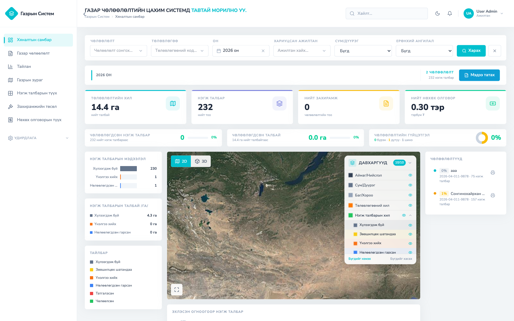
Зураг 3. Хяналтын самбар — 6 шүүлтүүр, «Мэдээ татах», 4 KPI карт, чөлөөлөгдсөн талбарын явц, гүйцэтгэлийн бөгж, статусын задаргаа, давхаргын самбартай газрын зураг, чөлөөлөлтүүдийн жагсаалт (2026-09-07-ны бодит дэлгэц)
9.2 Газар чөлөөлөлт — жагсаалт
- Баганууд — Төлөвлөгөө (код + нэр), Чөлөөлөлтийн нэр, Ерөнхий/Дэд ангилал, Статус (Шинэ/Хээрийн судалгаа/Баталгаажсан/Цуцлагдсан), Талбай, Эхлэх огноо, Нэгж талбарын тоо
- Шүүлтүүрүүд — Төлөвлөгөө, чөлөөлөлт, ангилал, төлөв, ажилтан, он — «Хайх»/«Цэвэрлэх» товчнууд
- Мөрийн үйлдлүүд — «Дэлгэрэнгүй» линк; «Устгах» (land:delete эрхтэй, баталгаажуулах асуулттай); баталгаажсан чөлөөлөлт гадаад хэрэглэгчид «Хаалттай» тэмдэгтэй
«Нэмэх» — шинэ чөлөөлөлт бүртгэх 2 алхамт цонх (зөвхөн ахлах мэргэжилтэн, land:create):
- 1-р алхам: газар зохион байгуулалтын төлөвлөгөөг нэгж талбарын дугаараар хайж олох. Систем төлөвлөгөөг олоод хилтэй эсэхийг шалгана
- 2-р алхам: Чөлөөлөлтийн нэр*, Ерөнхий ангилал*, Дэд ангилал*, Эхлэх огноо*, Хэрэгжүүлэгч байгууллага, Хариуцах байгууллага, Чөлөөлөх шалтгаан — «Бүртгэх»
(12346) Нэр.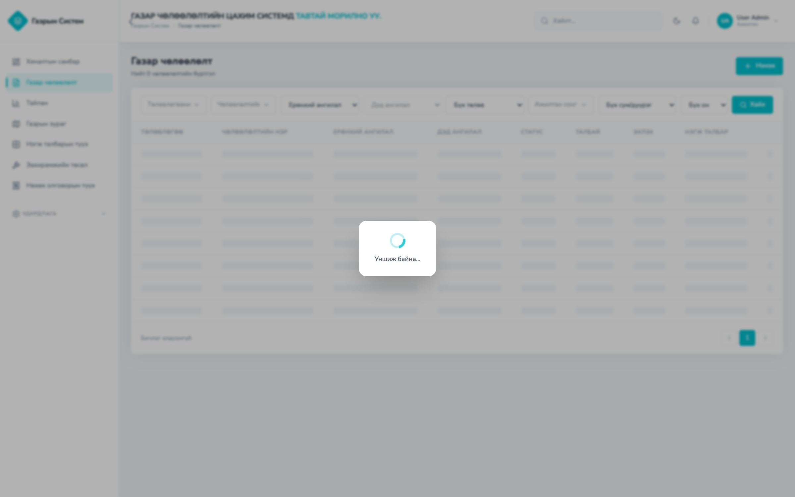
Зураг 4. Газар чөлөөлөлтийн жагсаалт — шүүлтүүрүүд, явцын хувь, статусын тэмдэглэгээ, мөрийн үйлдлүүд
9.3 Газар чөлөөлөлтийн дэлгэрэнгүй — 7 таб
Толгой хэсэгт нэр, статус, төлөвлөгөөний код, «Тайлан татах» (тухайн чөлөөлөлтийн Excel тайлан) товч байрлана. Баталгаажсан чөлөөлөлт бүх засварыг түгжинэ. Гадаад ролиуд зөвхөн «Ерөнхий мэдээлэл» ба «Нэгж талбарууд» табыг харна.
| Таб | Агуулга ба үйлдлүүд |
|---|---|
| Ерөнхий мэдээлэл | Үндсэн ба төслийн мэдээлэл; «Засах» горимд: хил солих файл, талбайг «Хилээс тооцоолох», Мэргэжлийн байгууллага сонгох, НЗД захирамжийн дугаар/огноо, чөлөөлөх шалтгаан |
| Хавсралт | Баримт бичгийн жагсаалт (PDF, ≤50MB); «Нэмэх» — файлын төрөл сонгож байршуулах; татах, «Устгах» |
| Нэгж талбарууд | Талбаруудын хүснэгт: дугаар, баг, эрхийн төрөл, зориулалт, талбай, давхцал, нөхөн төлбөрийн хэлбэр, төлөв; дугаар/захиргааны нэгж/эрхийн төрөл/зориулалт/төлөвөөр шүүх; «Дэлгэрэнгүй» линк. «Нэгж талбар татах» — чөлөөлөх хилээр огтлолцох талбаруудыг кадастрын системээс тодорхойлж бүртгэнэ. Санхүү зөвхөн илгээгдсэн үнэлгээтэй талбаруудыг харна |
| Санхүүжилт | Эх үүсвэрүүдийн хүснэгт (байгууллага, төрөл, дүн MNT/USD/EUR/CNY, тайлбар, нийт дүн); «Нэмэх», «Засах», «Устгах» — зөвхөн ахлах мэргэжилтэн |
| Явц | Одоогийн төлөв + «Явц солих» цонх: шилжүүлэх төлөв сонгох, «Баталгаажсан» руу шилжихэд НЗД-ын захирамжийн дугаар*, огноо* заавал; бүх талбар эцсийн төлөвт байхыг шаардана. Явцын түүхийн хүснэгт |
| Ажилтнууд | Хуваарилагдсан ажилтнуудын жагсаалт; «Ажилтан нэмэх» 2 алхамт цонх (нэр/албан тушаалаар хайж олноор сонгох → баталгаажуулах); хасах үйлдэл — зөвхөн ахлах мэргэжилтэн. Шинээр нэмэгдсэн ажилтанд мэдэгдэл очно |
| Байршил | Чөлөөлөлтийн хил, нэгж талбарууд, захиргааны нэгжийн зурган дүрслэл (OpenLayers) · 2D/3D сонголт (CesiumJS) · бүтэн дэлгэц · «Ажлын зураг» хэвлэх цонх (гарчиг, цаасны хэмжээ, хэвтээ/босоо) · дроны ортофото: GeoTIFF байршуулах, GeoServer-т бүртгүүлж «Шинэчлэх», зураг дээр очих, харагдацыг асаах/унтраах, устгах |
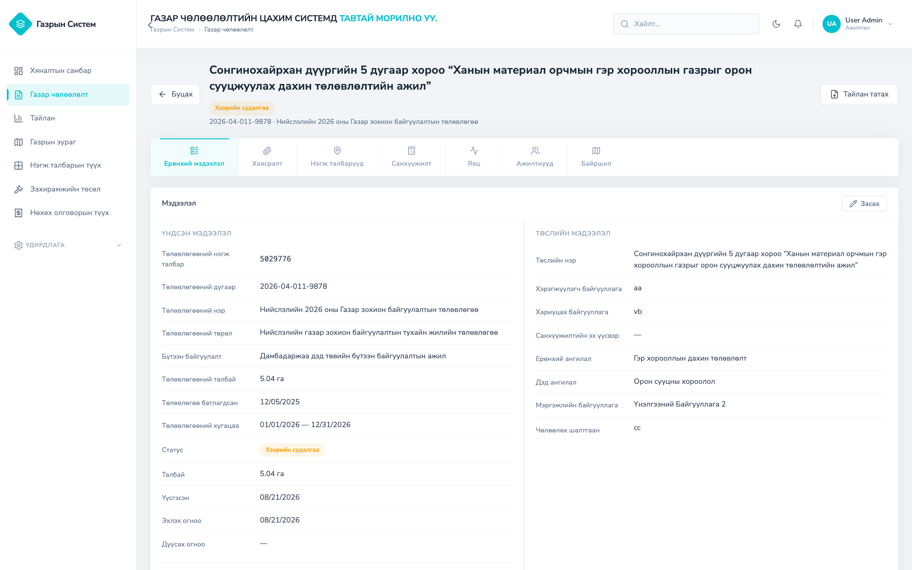
Зураг 5. Чөлөөлөлтийн дэлгэрэнгүй — 7 таб, үндсэн ба төслийн мэдээлэл, «Тайлан татах» товч
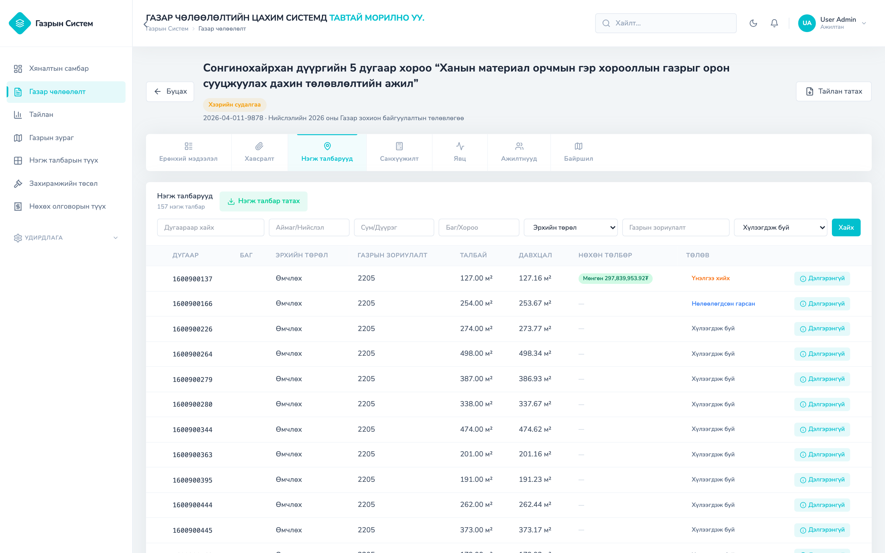
Зураг 6. «Нэгж талбарууд» таб — «Нэгж талбар татах» товч, 7 шүүлтүүр, төлөвийн тэмдэглэгээтэй хүснэгт
parcels-tab.tsx-д хадгалагдсан хэвээр — эргүүлэн идэвхжүүлэхэд бэлэн. Одоогоор дэлгэрэнгүйг нэгж талбар бүр дээр «Нэгж талбарын мэдээлэл дуудах» товчоор шаардлагатай үед нь татна (9.5).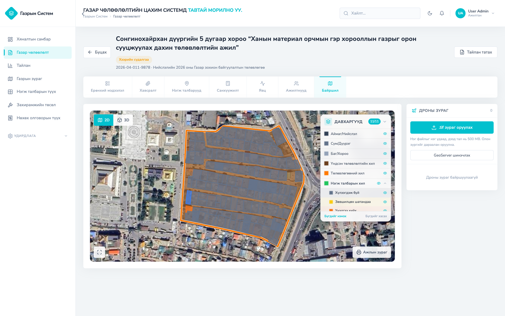
Зураг 7. «Байршил» таб — чөлөөлөлтийн хил, нэгж талбарууд, давхаргын самбар, дроны ортофотогийн жагсаалт, «Ажлын зураг» хэвлэх
9.4 Нэгж талбарын түүх — нэгдсэн жагсаалт
- Баганууд — Дугаар, Чөлөөлөлт (нэр + төлөвлөгөөний код), Огноо, Чөлөөлөлтийн төлөв, Эрхийн төрөл, Зориулалт, Талбай, Нөхөн төлбөрийн хэлбэр, Төлөв
- Шүүлт ба үйлдэл — Талбарын дугаар, төлөвлөгөө, чөлөөлөлт, эрхийн төрөл, зориулалт, төлөвөөр шүүнэ; «Дэлгэрэнгүй» линк талбарын хуудас руу очно
9.5 Нэгж талбарын дэлгэрэнгүй — 8 таб
Талбар «Чөлөөлсөн», «Татгалзсан», «Нөлөөллөөс гарсан» төлөвт орсон эсвэл чөлөөлөлт баталгаажсан үед засвар түгжигдэнэ. Мэргэжлийн байгууллага бүх үйлдлээ /prof порталаар хийнэ. Табын тоо эрхээс хамаарч өөрчлөгдөнө: дотоод ажилтанд 8, мэргэжлийн байгууллагад «Ерөнхий мэдээлэл», «Эзэмшигч», «Нөхөх олговор» гурав, МИКА/санхүүд «Ерөнхий мэдээлэл», «Нөхөх олговор» хоёр; «Захирамж» таб нь decision:read эрхтэй хэрэглэгчид л харагдана.
| Таб | Агуулга ба үйлдлүүд |
|---|---|
| Ерөнхий мэдээлэл | Талбарын мэдээлэл (дугаар, захиргааны нэгж, эрхийн төрөл, зориулалт, нийт/чөлөөлөгдөх талбай, үлдэх хэмжээ); «Засах» горимд чөлөөлөгдөх талбай, хилийн WKT/GeoJSON, МС-д өөрчлөлт орсон тэмдэглэгээ; «Хилээс тооцоолох»; «Мэдээлэл дуудах» — кадастр, төлбөр-үнэлгээ, мониторингийн мэдээллийг алхамчилсан синхрончлолоор татна; байршлын зураг |
| Эзэмшигч | Эзэмшигчийн мэдээлэл (нэр, регистр, утас, и-мэйл); өргөдөл, шийдвэр, гэрээ, гэрчилгээний дугаарууд; газрын үнэлгээ (бүс, суурь үнэ, дуудлагын итгэлцүүр); «Итгэмжлэгдсэн төлөөлөгч» бүртгэх/устгах; «Нөхөн төлбөр авагч» сонгох |
| Барьцаа, төлбөр | Газрын төлбөрийн нэхэмжлэл (нийт дүн / төлсөн / үлдэгдэл), газрын төлбөрийн бодолт, газрын суурь үнэ, барьцааны мэдээлэл ба гэрээний хавсралт, шүүхийн шийдвэрийн мэдээлэл — олговор олгохын өмнөх эрсдэлийн шалгалт. Зөвхөн дотоод ажилтан |
| Нөхөх олговор | Гурван үнэлгээний дэд таб (доор дэлгэрэнгүй) |
| Баримт бичиг | Талбарын хавсралтууд (PDF ≤50MB); төрөл сонгож «Нэмэх», татах, «Устгах» |
| Захирамж | Тухайн нэгж талбартай холбогдсон захирамжийн төслүүд, дугаар, огноо, төлөв. Зөвхөн decision:read эрхтэй хэрэглэгчид |
| Эх хэвлэл | 12 хэвлэх загвар (доор жагсаав) — «Татах» товчоор мэдээлэл автоматаар бөглөгдөж үүснэ |
| Явц | Одоогийн статус + «Явц нэмэх»: статус сонгох → баталгаажуулах; «Чөлөөлсөн» болгохын өмнө сонгосон урсгалын олговор зөвшөөрөгдсөн, үнэлгээний тайлан хавсаргагдсан байхыг шаардана; явцын түүхийн цагийн хэлхээ |
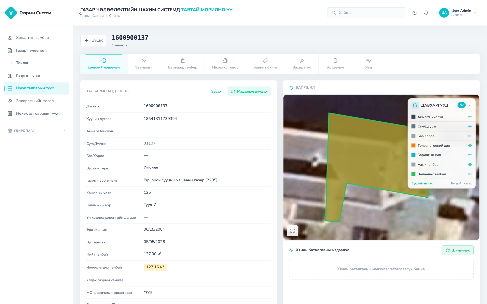
Зураг 8. Нэгж талбарын дэлгэрэнгүй — 8 таб, «Нэгж талбарын мэдээлэл дуудах» алхамчилсан синхрончлол
9.5.1 «Нөхөх олговор» таб — үнэлгээний 3 дэд таб
«Үндсэн үнэлгээ» (мэргэжлийн байгууллага), «Хөндлөнгийн үнэлгээ» (хөндлөнгийн байгууллага), «МИКА» гэсэн 3 зэрэгцээ урсгал. Санхүүгийн баталсан урсгал «Үндсэн үнэлгээ» болж, бусад нь «Идэвхгүй» тэмдэглэгддэг.
- Илгээх-батлах workflow — Төлөвийн зурвас: Ноорог → Илгээсэн → Баталгаажсан/Буцаагдсан/Татгалзсан; «Түүх» товч бүх шилжилтийг харуулна
- Шилжилтийн товчнууд — «Илгээх» (үнэлгээ оруулсан байгууллага), «Буцаах» ба «Нөхөх олговор баталгаажуулах» (санхүүгийн мэргэжилтэн) — бүгд тайлбар* шаардана
- Excel импорт — «Excel-ээс оруулах» — .xlsx файлыг хөтөч дотор задалж, үнэлгээний байгууллага, газрын үнэлгээ, хөрөнгийн тодорхойлол, өртгийн хандлага, зардлын хэсгүүдийг урьдчилан харуулж засварлан «Системд оруулах»; давхардлыг SHA-256 хэшээр шалгана
- Байгууламж — «Хөрөнгө нэмэх» — байгууламжийн дугаар, төрөл (үл хөдлөх/эд хөрөнгө), нэр, давхар, талбай, эзэмшигч; чанарын үзүүлэлт ба тооцооллын утгууд; олговрын мөрүүд (хэлбэр, хувь, дүн); зураг хавсаргах (PDF болно)
- Олговрын хяналт — Хүснэгтэд өргөтгөх мөр — олговрын задаргаа; санхүү pending олговор дээр «Зөвшөөрөх»/«Татгалзах» (тайлбартай); олговрын түүх харах
- Газрын үнэлгээ — Талбай × м²-ийн суурь үнэ = нийт дүн; «Хадгалах»/«Устгах»
- Тайлан ба байгууллага — «Тайлан хавсаргах/солих» — сонгогдсон урсгал дээр үнэлгээний тайланг талбарын баримтаар хадгална; «Хөндлөнгийн байгууллага холбох/солих/салгах»
- Нэгтгэл — Газрын үнэлгээ, хөрөнгийн үнэлгээ, нэгдсэн дүнгийн нэгтгэл картууд
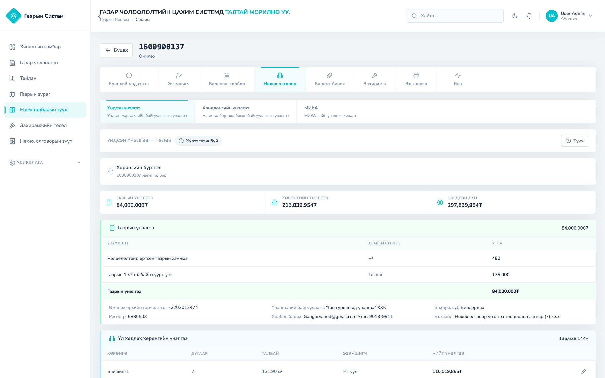
Зураг 9. «Нөхөх олговор» таб — 3 үнэлгээний дэд таб, төлөвийн зурвас, газрын үнэлгээ ба хөрөнгийн бүртгэлийн нэгтгэл
9.5.2 «Эх хэвлэл» — хэвлэх загварууд (12)
| № | Загвар | Формат | Тайлбар |
|---|---|---|---|
| 1 | Урьдчилан мэдэгдэх хуудас | DOCX | Эзэмшигч, талбарын мэдээллээр бөглөгдөнө |
| 2 | Санал асуулгын хуудас | DOCX | Нөлөөлөлд өртсөн этгээдэд |
| 3 | Нийгэм эдийн засгийн судалгаа | DOCX | Судалгааны маягт |
| 4 | Шалгах хуудас | DOCX | Хээрийн судалгааны шалгах хуудас |
| 5 | Хурлын тэмдэглэл | DOCX | Тухай бүр үйлдэж хавсаргана |
| 6 | Уулзалтын тэмдэглэл | DOCX | Иргэнтэй хийсэн уулзалт |
| 7 | Гэрээ | DOCX | Хурлын тэмдэглэлийг хавсралт болгон нийлүүлж хэвлэнэ |
| 8 | Захирамжийн төсөл | XLSX | Талбар, эзэмшигч, дүнгээр автоматаар бөглөгдөнө |
| 9 | Чөлөөлсөн газрыг хүлээлцсэн акт | DOCX | Хүлээлцэх акт |
| 10 | Чөлөөлсөн газрыг хүлээлцсэн акт 2 | DOCX | Өөр загвар |
| 11 | Хяналтын карт | DOCX | Нэгж талбарын хяналтын карт |
| 12 | Төлбөрийн гүйцэтгэл | XLSX | Олговрын төлбөрийн гүйцэтгэл |
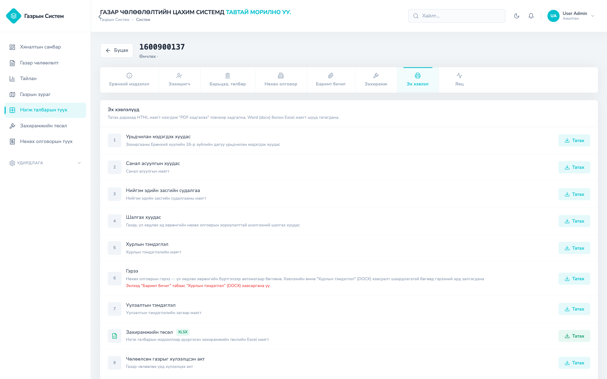
Зураг 10. «Эх хэвлэл» таб — 12 албан баримтын загвар, «Татах» товчоор мэдээлэл автоматаар бөглөгдөнө
9.6 Захирамжийн төслийн модуль
Нөхөх олговрын захирамжийн төслийг бэлтгэх, санхүүжилттэй уялдуулах, нэгж талбар холбох, явц бүртгэж батлах бие даасан модуль. Газрын эрх (land:*) энд хүчингүй — тусдаа эрхийн бүлэгтэй тул захирамжтай ажилладаг мэргэжилтэн зөвхөн энэ модульд хандана. Гадаад ролиуд (мэргэжлийн байгууллага, МИКА, санхүү) эрх санамсаргүй олгогдсон ч энэ модульд хүрэхгүй.
| Хэсэг | Агуулга ба үйлдлүүд |
|---|---|
| Жагсаалт | Саналын хуудасны дугаар, захирамжийн дугаар, нэгж талбарын дугаар, байршил, хугацаа (он), төлөвөөр шүүх; мөр бүрд нийт санхүүжилт ба ашигласан дүн; «Дэлгэрэнгүй»; «Тайлан» — Excel татах |
| Шинэ төсөл | Саналын хуудасны дугаар*, Байршил*, Хугацаа (он)*, Ажлын төрөл*, Төсөв* — сүүлийн хоёр нь тохиргооны лавлахаас (/decision_work_type, /decision_budget) |
| Санхүүгийн эх үүсвэр | Чөлөөлөлтөд бүртгэгдсэн эх үүсвэрээс сонгож, энэ захирамжид ногдох мөнгөн дүнг бичнэ; нийт ба ашигласан дүн хянагдана; давхардсан эх үүсвэрийг сануулна; хасах боломжтой |
| Нэгж талбар холбох | Дугаараар хайж холбоно, аль эх үүсвэрээс санхүүжихийг сонгоно; эх үүсвэргүй үед «Эхлээд санхүүгийн эх үүсвэр нэмнэ үү» гэж зогсооно; мөрийн эх үүсвэрийг солих, нэгж талбарыг хасах |
| Явцын бүртгэл | Хэнд* (хянагч, хэлтэс, байгууллага), Огноо*, Тайлбар — явцын түүх цагийн дарааллаар хадгалагдана |
| Баталгаажуулах | Захирамжийн дугаар* (жишээ А/123), Захирамжийн огноо*, Тайлбар. Батлагдсан захирамж холбогдсон нэгж талбарын «Захирамж» табд харагдана |
| Татах | Захирамжийн бичиг — DOCX (/api/decision-draft/[id]/docx); нэгдсэн тайлан — XLSX (/api/decision-draft/report) |
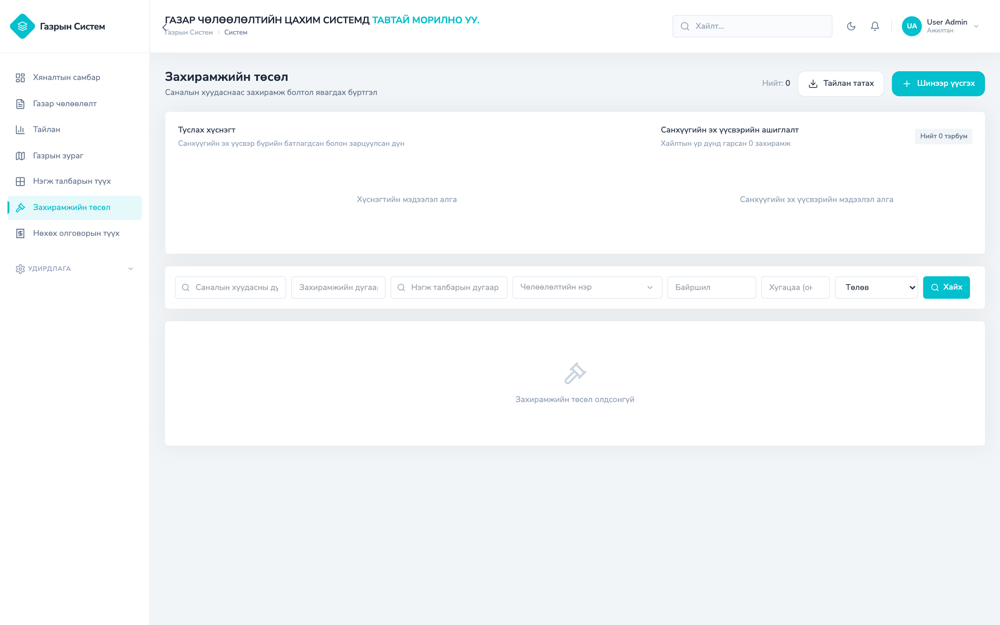
Зураг 11. Захирамжийн төслийн жагсаалт — шүүлтүүрүүд, санхүүжилтийн задаргаа, төлөвийн тэмдэглэгээ
9.7 Нөхөх олговорын түүх
- Статистик — Нийт / Батлагдсан / Хүлээгдэж буй / Татгалзсан тоон картууд
- Баганууд — Нэгж талбар (линк), Эзэмшигч (+чөлөөлөлтийн нэр), Регистр, Хэлбэр (Мөнгөн/Газраар), Дүн, Огноо, Төлөв
- Шүүлтүүр — Талбарын дугаар/эзэмшигчээр хайх, чөлөөлөлт, олговорын хэлбэр, төлөвөөр шүүх
- Дэлгэрэнгүй — Дэлгэрэнгүй нь хэвлэхэд бэлэн баримт хэлбэртэй — «Хэвлэх» товчтой; олговор бүртгэх үйлдэл талбарын «Нөхөх олговор» табаас хийгдэнэ
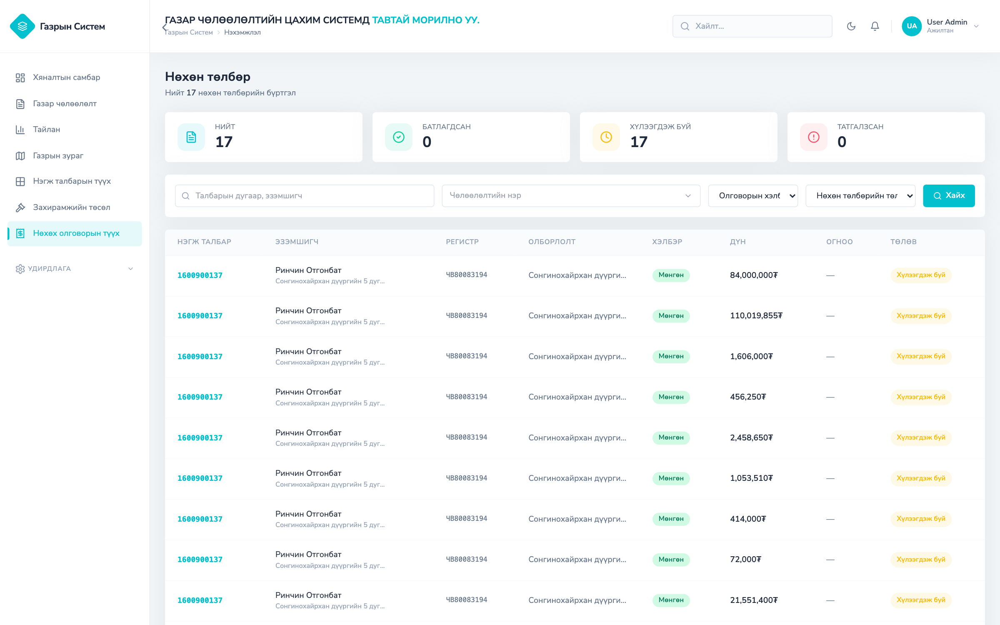
Зураг 12. Нөхөх олговорын нэгдсэн жагсаалт — статистик картууд, шүүлтүүр, төлөвийн тэмдэглэгээ
9.8 Тайлан
- Баганууд — Нэгж талбарын дугаар, чөлөөлөлт, төлөвлөгөө, ангилал, өмчлөгч, регистр, талбай, чөлөөлөх талбай, эрхийн төрөл, нөхөн төлбөрийн дүн
- Шүүлтүүр — Төлөвлөгөө, чөлөөлөлт, он (олон сонголт), эрхийн төрөл, зориулалт, олговорын хэлбэр, ангиллаар шүүнэ
- Статистикийн картууд — Хяналтын самбартай адил загварын KPI карт (нийт чөлөөлөлт, нэгж талбар, нийт талбай, нөхөх олговрын дүн хэлбэрээр), он ба төлөвөөр задалсан баганан график — идэвхтэй шүүлтийн БҮХ (хуудаслаагүй) үр дүнгээр тооцогдоно
- Excel экспорт — «Тайлан татах» — Excel файлыг сервер талд загвараас үүсгэн, явцын мэдээллийг бодит цагт (N/нийт) харуулж татна (SSE стрийм)
Гүйцэтгэлийн засвар: Статистикийн картуудыг өмнө нь хуудаслагдсан жагсаалтын бүх хуудсыг дараалан татаж клиент талд нэгтгэдэг байсан нь том жагсаалтад /report/download-ыг 10 гаруй удаа давхар дуудуулж байв. Үүнийг сервер талд нэг л дуудлагаар нэгтгэн тооцдог шинэ GET /report/summary endpoint болгож зассан.
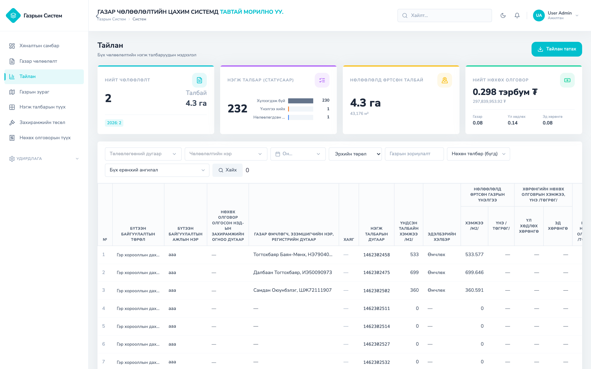
Зураг 13. Тайлан — нэгтгэсэн статистикийн картууд, 10 шүүлтүүр, ГЧХ маягтын 18 баганат хүснэгт, «Тайлан татах»
9.9 Газрын зураг
- Захиргааны давхаргууд — Аймаг/Нийслэл, Сум/Дүүрэг, Баг/Хороо
- Төлөвлөлт, чөлөөлөлтийн давхаргууд — Үндсэн төлөвлөлтийн хил, Төлөвлөгөөний хил, Чөлөөлөх талбай, Барилгын хил
- Нэгж талбарын давхаргууд — ерөнхий давхарга + статусын 6 давхарга (Хүлээгдэж буй, Зөвшилцөх шатандаа, Үнэлгээ хийх, Нөлөөлөгдсөн гарсан, Татгалзсан, Чөлөөлсөн)
- Дроны ортофото — байршуулсан GeoTIFF зураг бүр өөрийн давхаргатай, асаах/унтраах боломжтой
- Үйлдлүүд — Давхаргын самбараас асааж/унтраана; объект дээр дарахад нэгж талбар эсвэл чөлөөлөлтийн мэдээллийн цонх нээгдэнэ; 2D/3D сонголт (CesiumJS — одоогийн харагдац, зумыг хадгална); бүтэн дэлгэц; «Ажлын зураг» хэвлэх (гарчиг, цаасны хэмжээ, хэвтээ/босоо)
- Шүүлт — Хяналтын самбараас чөлөөлөлт, он, захиргааны нэгж, ажилтнаар CQL шүүлт дамждаг
styles/*.sld) тодорхойлогдоно. Frontend-ийн layer-config.ts нь зөвхөн давхаргын самбар дахь тайлбарын өнгө, нэр, эрэмбийг агуулна.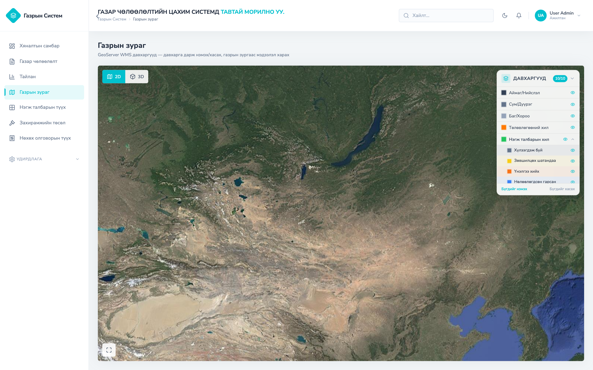
Зураг 14. Газрын зураг — GeoServer давхаргууд, давхаргын самбар, 2D/3D сонголт, нэгж талбарын статусын өнгөт дүрслэл
9.10 Хэрэглэгчид ба Эрх & Роль
- Хэрэглэгчид — Хэрэглэгчийн жагсаалт (нэр, албан тушаал, и-мэйл, роль, идэвхтэй эсэх); «Нэмэх» — нэр*, овог*, хэрэглэгчийн нэр*, албан тушаал, и-мэйл*, роль, нууц үг*; мөрийн үйлдэл: «Засах», нууц үг солих, «Устгах»
- Эрх & Роль — «Роль нэмэх» (нэр*, тайлбар); ролийн «Засах»/«Устгах»; роль сонгоход цэс тус бүрийн зөвшөөрлүүд бүлэглэгдэн харагдаж, тохируулаад «Хадгалах»; шаардлагагүй цэсний холбоосыг хасах боломжтой
- Эрх нэмэгдүүлэлтээс сэргийлэх — өөрийн роль, төлөвийг өөрөө өөрчлөх, өөрийгөө устгах хориотой; өөрт байхгүй эрхийг бусдад олгож чадахгүй. Эдгээр шалгалт frontend (
access-policy.ts) ба backend (role.go,user.go) дээр давхар хийгдэнэ
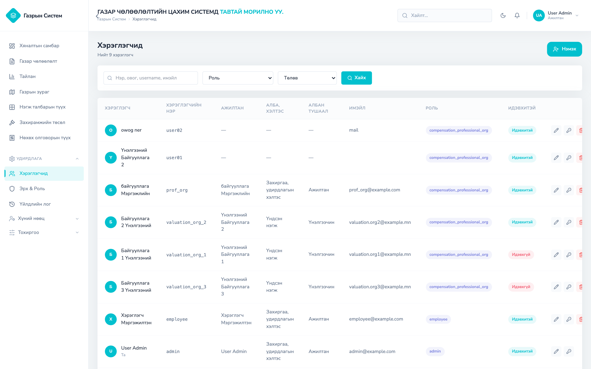
Зураг 15. Хэрэглэгчийн бүртгэл — хайлт, роль болон төлөвийн шүүлтүүр, мөрийн үйлдлүүд
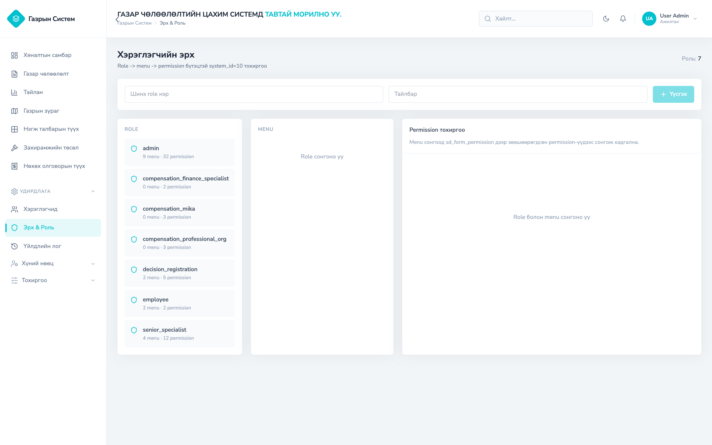
Зураг 16. Эрх & Роль — ролийн жагсаалт, цэс тус бүрийн зөвшөөрлийн тохиргоо
9.11 Миний чөлөөлөлтүүд (мэргэжлийн байгууллага)
- Хязгаарлагдмал жагсаалт — Зөвхөн өөрийн байгууллагад оноогдсон чөлөөлөлтүүд; нэрээр хайх; «Дэлгэрэнгүй» (баталгаажсан бол «Хаалттай»); үүсгэх/засах үйлдэлгүй
- Тусгаарлалт — Бүх дуудлага
/profпорталын 45 сувгаар явна; ерөнхий/land-acquisitionsсувгуудад хүрэхгүй
9.12 Тохиргооны 10 модуль (админ)
Эдгээр 10 дэлгэц нь системийн «тохируулгын самбар» юм: байгууллагын ажлын дүрэм, ангилал, статусууд өөрчлөгдөхөд программист дуудахгүйгээр админ өөрөө эндээс өөрчилдөг. Бүх модуль «Нэмэх» / «Засах» / «Устгах» (баталгаажуулах асуулттай) нэгдсэн загвартай.
| Модуль | Юу тохируулах, системд хэрхэн нөлөөлөх |
|---|---|
| Чөлөөлөлтийн ангилал | Ерөнхий ангилал ба түүний доторх дэд ангиллын мод (нэр, эрэмбэ). Шинэ чөлөөлөлт бүртгэхэд заавал сонгогдоно; хяналтын самбар болон тайлангийн шүүлтүүрт ашиглагдана. Жишээ: «Авто зам» ерөнхий ангилал дотор «Гүүр» дэд ангилал нэмж болно |
| Чөлөөлөлтийн явцын статус | Чөлөөлөлтийн түвшний статусууд (нэр, тайлбар). Чөлөөлөлтийн «Явц» таб дээр харагдах төлөвүүдийг тодорхойлно |
| Нэгж талбарын статус | Талбарын амьдралын мөчлөгийн статусууд (код, нэр, эрэмбэ) — Хүлээгдэж буй, Зөвшилцөх шатандаа, Үнэлгээ хийх, Чөлөөлсөн г.м. Газрын зурган дээрх өнгөт давхаргууд (s0–s5) эдгээртэй уягдана. «Үнэлгээ хийх» статуст орсон талбар үнэлгээний байгууллагуудад автоматаар мэдэгдэл илгээнэ |
| Баримт бичгийн төрөл | Хавсралтын төрлүүд (код, нэр, хамрах хүрээ: чөлөөлөлт/талбар). Файл хавсаргах цонхны «Файлын төрөл» сонголтыг бүрдүүлнэ. Онцгой: valuation_report (Хөрөнгийн үнэлгээний тайлан) төрөлт баримт нь талбарыг «Чөлөөлсөн» болгох урьдчилсан нөхцөл |
| Нэгж талбарын ажлын урсгал | Талбарын аль статусаас аль статус руу шилжиж болохын дүрэм (эхлэх статус → очих статус, эрэмбэ). Талбарын «Явц нэмэх» цонхонд зөвхөн энд зөвшөөрөгдсөн шилжилтүүд санал болгогдоно — буруу дарааллаар алхам алгасахаас сэргийлнэ |
| Чөлөөлөлтийн ажлын урсгал | Чөлөөлөлтийн статусын шилжилтийн дүрэм (Шинэ → Хээрийн судалгаа → Баталгаажсан г.м.). Тохируулаагүй шилжилтийг систем зөвшөөрөхгүй |
| Байгууламжийн чанарын төрөл | Барилга байгууламжийн чанарын үзүүлэлтийн төрлүүд (код, нэр, эрэмбэ) — жишээ нь барилгын хийц, зориулалт. «Хөрөнгө нэмэх» цонхонд нэмэлт талбар болж харагдана; Excel импортын багана эдгээртэй тулгагдана |
| Байгууламжийн тооцооллын төрөл | Үнэлгээний тооцооллын үзүүлэлтүүд (код, нэр, хэмжих нэгж — жишээ нь «төгрөг/м²»). Хөрөнгийн үнэлгээний тооцоололд ашиглагдаж, нэгж үнэ × хэмжээ хэлбэрийн мөрүүдийг бүрдүүлнэ |
| Ажлын төрөл | Захирамжийн төсөл үүсгэхэд сонгогдох «Ажлын төрөл»-ийн лавлах (нэр, эрэмбэ) |
| Төсөв | Захирамжийн төсөл үүсгэхэд сонгогдох «Төсөв»-ийн лавлах (нэр, эрэмбэ) |
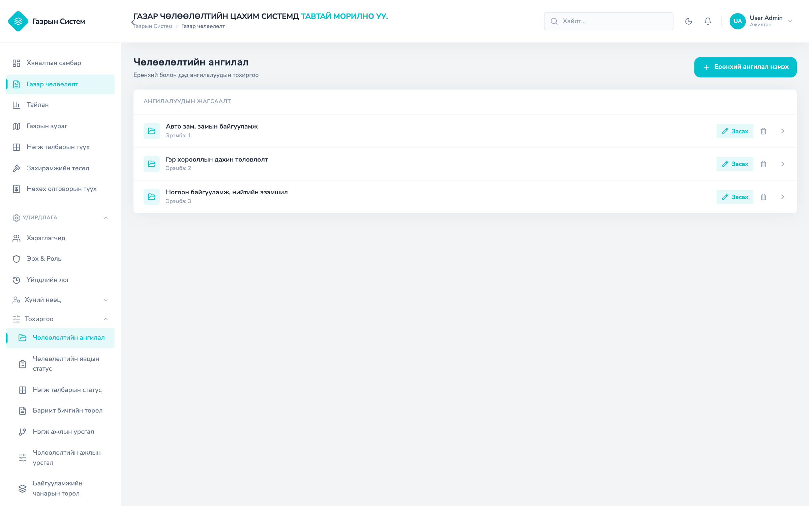
Зураг 17. Тохиргооны жишээ — «Чөлөөлөлтийн ангилал»: ерөнхий ба дэд ангиллын мод, хариуцсан алба, эрэмбэ
9.12.1 Хүний нөөцийн 6 бүртгэл
| Бүртгэл | Зам | Гол талбарууд |
|---|---|---|
| Иргэн, хуулийн этгээд | /person | Төрөл (иргэн / хуулийн этгээд), регистр эсвэл ТТД, овог, нэр эсвэл хуулийн этгээдийн нэр |
| Ажилтан | /employee | Байгууллага*, алба хэлтэс, албан тушаал*, ажлын имэйл, утас, холбогдох иргэн* |
| Байгууллага | /organization | Нэр*, код |
| Үнэлгээний байгууллага | /valuation_org | Нэр*, товч нэр, ТТД/регистр, тусгай зөвшөөрлийн дугаар, хүчинтэй хугацаа, холбоо барих + ажилтнууд (нэвтрэх нэртэйгээр) |
| Алба, хэлтэс | /department | Харьяа байгууллага, нэр, код |
| Албан тушаал | /position | Нэр, код |
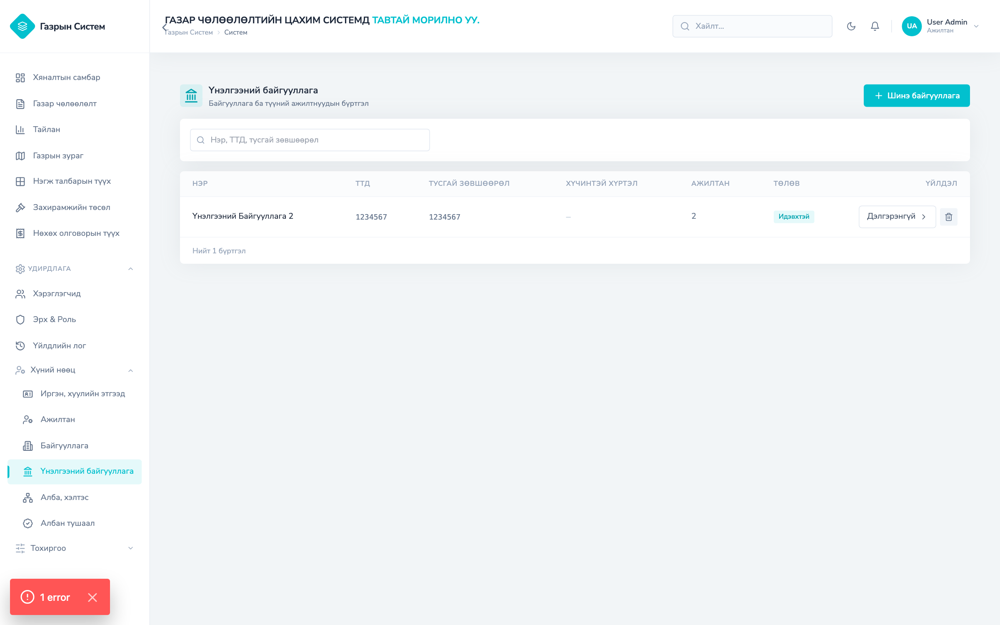
Зураг 18. Үнэлгээний байгууллагын бүртгэл — тусгай зөвшөөрөл, хүчинтэй хугацаа, ажилтны тоо, төлөв
9.13 Мэдэгдлийн систем — бодит цагийн
Мэдээллийн төлөв өөрчлөгдөх бүрд тухайн мэдээлэлтэй холбоотой бүх хэрэглэгчид мэдэгдэл үүсч, Server-Sent Events (SSE) стриймээр хөтөч рүү шууд түгээгдэнэ. Мэдэгдэл дээр дарахад холбогдох мэдээллийн дэлгэрэнгүй хуудас руу шилжинэ.
- Архитектур — notification хүснэгт (main DB) → NotificationService → in-memory SSE hub → хөтчийн стрийм. Мэдэгдэл эхлээд DB-д хадгалагдаж дараа нь идэвхтэй холболтууд руу түгээгдэнэ — холболт тасарсан үед ч мэдээлэл алдагдахгүй
| Endpoint | Үүрэг |
|---|---|
| GET /notifications | Өөрийн мэдэгдлийн жагсаалт (хуудаслалт, unread шүүлт) |
| GET /notifications/unread-count | Уншаагүй мэдэгдлийн тоо |
| GET /notifications/stream | SSE бодит цагийн стрийм (25с heartbeat-тэй) |
| POST /notifications/{id}/read | Нэг мэдэгдлийг уншсан болгох |
| POST /notifications/read-all | Бүгдийг уншсан болгох |
Мэдэгдэл илгээгдэх үйл явдлууд ба хүлээн авагчид:
| Үйл явдал | Хүлээн авагчид |
|---|---|
| Чөлөөлөлтийн статус шилжилт | Хуваарилагдсан ажилтнууд + мэргэжлийн байгууллага |
| Талбарын статус шилжилт | Хуваарилагдсан ажилтнууд |
| Талбар «Үнэлгээ хийх» төлөвт орох | Мэргэжлийн байгууллага + сонгогдсон хөндлөнгийн байгууллага (тусгай «Үнэлгээ хийх талбар ирлээ» мэдэгдэл) |
| Үнэлгээ илгээх (submit) | Санхүүгийн мэргэжилтнүүд + ажилтнууд |
| Үнэлгээ батлах / буцаах | Илгээсэн этгээд + байгууллагууд + ажилтнууд |
| Олговор бүртгэх | Санхүүгийн мэргэжилтнүүд + ажилтнууд |
| Олговор батлах / татгалзах | Бүртгэсэн этгээд + ажилтнууд + мэрг. байгууллага |
| Ажилтан хуваарилах | Зөвхөн шинээр нэмэгдсэн ажилтнууд |
| Байгууллага оноох | Тухайн байгууллага |
- Дүрэм — Үйлдэл хийсэн хүн өөрөө өөрийн үйлдлийн мэдэгдлийг авахгүй; давхардсан хүлээн авагч нэг л мэдэгдэл авна
- Хэрэглэгчийн интерфейс — Толгой цэсний хонх — уншаагүйн badge, шинэ мэдэгдэлд «Харах» товчтой toast; дарахад уншсан болж дэлгэрэнгүй рүү шилжинэ; таб идэвхжих/сүлжээ сэргэхэд стрийм автоматаар дахин холбогдож, тасалдлын үеийн мэдэгдлүүдийг нөхөж татна

Зураг 19. Мэдэгдлийн хонхны цэс — жагсаалт, уншсан/уншаагүй төлөв
- Аюулгүй байдал, найдвартай байдал — Token Authorization header-ээр (URL-д гардаггүй — лог/түүхэд нууц үлдэхгүй); хэрэглэгч зөвхөн өөрийн мэдэгдэлд ханддаг (repo түвшний recipient шүүлт); нэг хэрэглэгч дээд тал нь 8 зэрэгцээ стрийм; мэдэгдлийн алдаа үндсэн үйлдлийг хэзээ ч унагаахгүй (async)
9.14 Аудит лог — үйлдлийн мөрдлөг
Хэн, хэзээ, ямар төхөөрөмж/хаягаас, ямар объект дээр, ямар өөрчлөлт хийснийг бүртгэх audit_log хүснэгт (шүүлтийн индексүүдтэй, одоо нэгтгэсэн baseline migration-д багтсан) нэмэгдсэн.
| Багана | Агуулга |
|---|---|
| actor_id, actor_name, actor_position, actor_roles | Үйлдэл хийсэн хэрэглэгч — JWT-ээс автоматаар |
| action | Үйлдлийн төрөл: created / updated / deleted / status_changed / valuation_submit / valuation_approve / valuation_return / imported / upserted г.м. |
| resource_type, resource_id | 8 төрлийн объект: acquisition, parcel, valuation, compensation, document, payment, funding_source, authorized_representative |
| acquisition_id, parcel_id | Холбогдох чөлөөлөлт/талбар — хайлтад ашиглагдана |
| details (JSONB) | Үйлдлийн дэлгэрэнгүй — өөрчилсөн утгууд, тоо хэмжээ (жишээ нь импортын үед үүссэн/устсан мөрийн тоо) |
| ip_address, user_agent | Хүсэлт ирсэн IP хаяг, хөтчийн мэдээлэл |
| created_at | Үйлдлийн огноо, цаг |
- Бүртгэх цэгүүд — Land service-ийн 36 мутацийн цэгээс бүртгэгдэнэ — статус шилжилт, үнэлгээний илгээх/батлах/буцаах, олговор үүсгэх/засах/устгах/батлах, Excel импорт, санхүүжилт, төлөөлөгч г.м.
- Автомат actor — Actor-ийн мэдээлэл (нэр, албан тушаал, роль, IP, User-Agent) auth middleware-ээс request context-оор автоматаар дамждаг — handler бүрт код нэмэх шаардлагагүй
- Гүйцэтгэл — Async fire-and-forget — лог бичилт үндсэн үйлдлийг удаашруулахгүй, алдаа гарвал зөвхөн серверийн логд тэмдэглэгдэнэ
- Хандалт — GET /audit-logs — audit:read зөвшөөрөлтэй (одоогоор зөвхөн админ); actor, action, resource, огнооны мужаар шүүж хуудаслан харна. Frontend-д «Аудит лог» жагсаалтын дэлгэц (/audit_logs) нэмэгдсэн
- Гадаад системийн дуудлагын лог — Ижил зарчмаар backend-ээс бусад (гадаад) системрүү илгээсэн HTTP дуудлага бүрийг бүртгэдэг
client_requestхүснэгт,GET /client-requestsendpoint нэмэгдсэн (5-р бүлэгт дэлгэрэнгүй)
| ҮР ДҮН | ДАВУУ ТАЛ | НЭМЭГДЭХ БОЛОМЖ |
|---|---|---|
| 13 багц модуль нэгдсэн урсгал бүрдүүлж, бүх чухал үйлдэл мэдэгдэл + аудитын давхар бүртгэлтэй | Үйлдэл бүр ролиор хязгаарлагдсан; мэдэгдэл бодит цагт; аудит IP/төхөөрөмжтэй мөрдөгдөнө | Аудит логийн админ дэлгэц; и-мэйл/E-Mongolia суваг; цахим гарын үсэг |
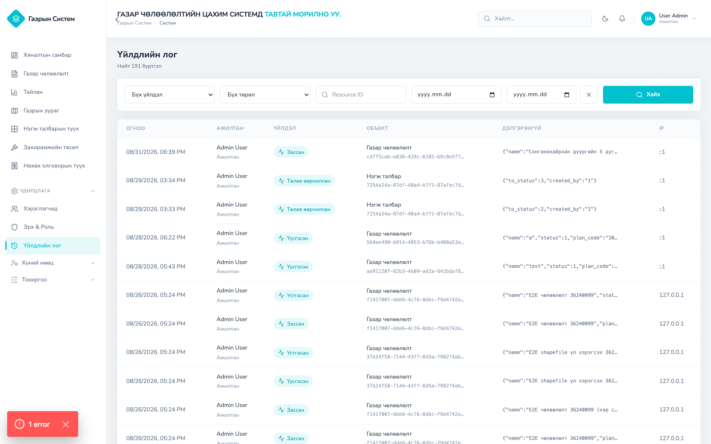
Зураг 20. Үйлдлийн лог — үйлдэл, объектын төрөл, огноогоор шүүх, дэлгэрэнгүй JSON
9.15 Цэс ба ажиллах дараалал
Энэ хэсэгт системийн цэсний бүтэц, роль тус бүрийн харагдац, гол ажиллах урсгалуудын (чөлөөлөлт, нэгж талбар, үнэлгээ) төлөвийн шилжилтийн дараалал болон код дотор бодитоор мөрдөгдөж буй шаардлагын (requirement) дүрмүүдийг нэгтгэв.

Зураг 21. Цэсний бүтэц — Удирдлага, Тохиргоо дэд цэснүүд дэлгэрсэн байдалтай
9.15.1 Цэсний бүтэц, роль тус бүрийн харагдац
| Цэс | Зам | Харагдах роль |
|---|---|---|
| Хяналтын самбар | / | Бүх 6 роль (гадаад 3 ролид хураангуй хувилбар) |
| Газар чөлөөлөлт | /acquisition | Админ, Ахлах, Мэргэжилтэн (бүрэн) · МИКА, Санхүү (зөвхөн энэ + самбар) |
| Тайлан | /report | Админ, Ахлах, Мэргэжилтэн |
| Газрын зураг | /map | Админ, Ахлах, Мэргэжилтэн |
| Нэгж талбарын түүх | /parcel | Админ, Ахлах, Мэргэжилтэн |
| Захирамжийн төсөл | /decision_draft | decision:read зөвшөөрөлтэй дотоод ажилтан |
| Нөхөх олговорын түүх | /compensation | Админ, Ахлах, Мэргэжилтэн |
| Миний чөлөөлөлтүүд | /my_acquisitions | Зөвхөн Мэргэжлийн байгууллага (өөрийн тусдаа хураангуй цэс) |
| Удирдлага (дэд цэс) | ||
| — Хэрэглэгчид | /users | Дотоод роль (Админ, Ахлах, Мэргэжилтэн) — users:read г.м. зөвшөөрлөөр backend талд эцсийн шалгагдана |
| — Эрх & Роль | /roles | Мөн адил, дотоод роль |
| — Аудит лог | /audit_logs | audit:read зөвшөөрөлтэй (seed өгөгдлөөр одоогоор зөвхөн Админ) |
| Хүний нөөц (дэд цэс, 6 бүртгэл) | ||
| Иргэн, Ажилтан, Байгууллага, Үнэлгээний байгууллага, Алба хэлтэс, Албан тушаал | /person г.м. | hr:read зөвшөөрөл + admin роль |
| Тохиргоо (дэд цэс, 10 модуль) | ||
| Ангилал, статус, урсгал, хөрөнгийн төрөл, ажлын төрөл, төсвийн 10 тохиргооны дэлгэц | /acquisition_category г.м. | admin:read зөвшөөрөлтэй (seed өгөгдлөөр одоогоор зөвхөн Админ) |
isExternal гэсэн нэг флагаар нэгтгэн авч үздэг ба тэдгээрийн цэс ердийн дотоод роль (Админ/Ахлах/Мэргэжилтэн)-той харьцуулахад эрс хураангуй байдаг: Мэргэжлийн байгууллага зөвхөн Самбар + «Миний чөлөөлөлтүүд» (тусдаа, зөвхөн харах жагсаалт), харин МИКА болон Санхүү Самбар + «Газар чөлөөлөлт» цэсийг л харна. Фронт талын харагдац нь зөвхөн таашаамж — бодит хандалтын хориг backend талын зөвшөөрөл/дугаарын шалгалтаар (доор 9.15.5) хийгддэг.9.15.2 Газар чөлөөлөлтийн ажиллах дараалал
Аль ч үе шатанд «Цуцлагдсан» (4) төлөвт шилжих боломжтой (тохиргооноос хамаарна).
acquisition_workflow хүснэгтэд шилжилтийн дүрэм нэмээгүй бол систем зөвхөн «дараагийн дугаар руу л» шилжихийг зөвшөөрдөг (буцах боломжгүй).9.15.3 Нэгж талбарын ажиллах дараалал
approved төлөвтэй байх; (2) үнэлгээний тайлан баримт бичиг хавсаргагдсан байх (эсвэл хуучин урсгалын хувьд олговрын бичлэгт тайлангийн URL бөглөгдсөн байх). Аль нэг нөхцөл хангагдаагүй бол «Үнэлгээний тайлан хавсаргаагүй байна» алдаа буцаж, төлөв шилжихгүй. Нэгж талбарын шилжилтийн дүрэм (аль төлөвөөс аль төлөв рүү зөвшөөрөгдөхийг) бүхэлдээ parcel_workflow тохиргооны хүснэгтээр удирддаг — хэрэв тохируулаагүй бол ямар ч шилжилт саналгүй.9.15.4 Үнэлгээ илгээх дэд урсгал
selected_valuation_type) урсгал болж бусад 2 урсгал «Идэвхгүй» болдог.9.15.5 Бусад объект түвшний хамгаалалт ба шаардлагын дүрэм
| Дүрэм | Тайлбар |
|---|---|
| Оноолт шалгах (assignment) | Ахлах мэргэжилтэн эсвэл тухайн чөлөөлөлтөд оноогдсон мэргэжилтэн л засах эрхтэй; Санхүү/МИКА зөвхөн уншиж болно (тусгайлан зөвшөөрөгдсөн бичих үйлдлээс бусад) |
| Түгжээ (Баталгаажсан) | «Баталгаажсан» чөлөөлөлтөд ямар ч бичих хүсэлт (POST/PUT/DELETE) 423 (Locked) алдаатай татгалзагдана; Мэргэжлийн байгууллагын /prof порталд бол GET хүсэлт ч түгждэг (илүү хатуу) |
| Байгууллагын гишүүнчлэл | Мэргэжлийн байгууллагын хэрэглэгч зөвхөн өөрт нь (эсвэл өөрийн хөндлөнгийн эрхээр) оноогдсон чөлөөлөлт/талбарт л /prof порталаар хандах боломжтой — өөр байгууллагын оноосон обьект руу орох боломжгүй |
| Файл хавсаргах | Баримт бичиг, зураг, shapefile тус бүр дээд тал нь 50MB; агуулгыг өргөтгөлөөр биш «эхний байт»-аар (magic bytes) шалгадаг — зөвхөн PDF зөвшөөрдөг, харин «Хурлын тэмдэглэл» баримтын төрөлд DOCX-ийг тусгайлан зөвшөөрдөг |
| Excel давхардлын хамгаалалт | Файлын SHA-256 хэш хөтөч дотор тооцогдож (файл өөрөө серверт хэзээ ч илгээгдэхгүй) бүртгэгдэнэ; хэрэв тухайн талбарт өмнө нь өгөгдөл орсон бол «Солих уу?» гэсэн баталгаажуулах цонх гарч, зөвшөөрвөл хуучин мэдээллийг устгаж шинээр орлуулна |
| Rate limit | Нэвтрэлтийн /auth зам минутад 30 хүсэлт (IP тус бүрээр); клиентийн лог зам минутад 120 хүсэлт |
9.16 Хяналт, лог ба Grafana
Систем 2026.07-с эхлэн Frontend, Backend хоёулаа нэг нэгдсэн лог/хяналтын урсгалд холбогдсон. Доор энэ урсгал яг хэрхэн ажилладгийг эх сурвалжаас нь дэлгэрэнгүй тайлбарлав.
/api/client-log route-оор дамжиж, Next.js серверийн stdout руу JSON мөр болж бичигдэнэslog-оор JSON бүтэцтэй лог (method, зам, статус, хугацаа, IP) серверийн stdout руу шууд бичигдэнэjson-file драйверт (10MB × 3 файл rotation) хадгалагданаcontainer_name/service/project шошготойгоор Loki руу дамжуулна- Backend API процесс ажиллаж эхлэхэд
gov_loki,gov_promtail,gov_grafana3 контейнер ажиллаж байгаа эсэхийг шалгаж, байхгүй бол өөрөөdocker compose up -dажиллуулна - Docker байхгүй эсвэл эхлэхэд алдаа гарвал зөвхөн анхааруулга бичиж, үндсэн API-г унагаахгүй (best-effort)
- Grafana анонимаар нэвтрэхийг хориглосон, админ хэрэглэгч/нууц үг орчны хувьсагчаар тохируулагдана
- Нууц (нууц үг, token) утгууд лог руу бичигдэхээс өмнө хөтөч болон серверийн 2 талд аль алинд нь хасагдана (redaction)

Зураг 22. Grafana — нэвтэрсэн байдал, хяналтын самбарын нүүр хуудас
10. Төлөвлөгөөний биелэлт
Хөгжүүлэлтийн нарийвчилсан төлөвлөгөө (plan.xlsx, 2026.05–09) нь задаргаа түвшний нийт 62 ажлаас бүрдэнэ. Үүнээс гүйцэтгэлийн үнэлгээ нь 1 ба 2-р бүлгийн — хөгжүүлэлтийн 50 ажлаар тооцогдоно. 3-р бүлгээс хойшх туршилт, суурилуулалт, сургалт, төслийн хаалтын 12 ажил нь хөгжүүлэлтийн бус зохион байгуулалтын ажил тул гүйцэтгэлийн хувьд оруулаагүй — 10.4-т мэдээллийн байдлаар тусад нь харуулав. Дүгнэлт 2026-09-07-ны кодын нөхцөл байдал болон 2026-08-25-ны хэрэгжилтийн хяналтад үндэслэв.
Тооллогын арга: бүлэг, дэд бүлгийн гарчиг мөрүүдийг ажлын тоонд оруулаагүй, зөвхөн задаргаа ажлуудыг тоолсон. «Лог файл үүсгэх» (2.4.4.6) ажлыг аудит логийн системийн хэрэгжилтээр хийгдсэнд тооцов.
| Төлөв | Тоо | Хувь | Жинтэй дүн |
|---|---|---|---|
| Хөгжүүлэлтийн нийт ажил (1, 2-р бүлэг) | 50 | 100% | — |
| Бүрэн хийгдсэн (100%) | 38 | 76% | 38.0 |
| Хэсэгчлэн хийгдсэн (60%) | 1 | 2% | 0.6 |
| Гадаад байгууллагын холболт хүлээгдэж (0%) | 11 | 22% | 0.0 |
| Ажлын гүйцэтгэл | 50 | 77.2% | 38.6 |
| Бүлэг | Ажил | Жинтэй дүн | Гүйцэтгэл |
|---|---|---|---|
| 1. Системийн бичиг баримтууд | 2 | 2.0 | 100% |
| 2. Систем хөгжүүлэлт | 48 | 36.6 | 76.3% |
| Ажлын гүйцэтгэл (1+2) | 50 | 38.6 | 77.2% |
Ажлын жинтэй гүйцэтгэл: 38.6/50 ажил (77.2%). Хөгжүүлэлт үндсэндээ дуусаж, үлдсэн 11 ажил бүгд системийн гаднах эх сурвалж (УБЕГ, Татварын ерөнхий газар, ШШГЕГ, E-Mongolia, түүхэн архив) нээгдэхийг хүлээж байна.
10.1 Бүрэн хийгдсэн ажлууд (38)
| Бүлэг | Тоо | Ажлууд (дугаар) ба баталгаа |
|---|---|---|
| Бичиг баримт, суурь технологи | 4 | Архитектурын загвар (1.1), техникийн тодорхойлолт (1.2), системийн template (2.1.1), Map server (2.1.2) |
| Системийн удирдлага, үндсэн бүртгэл | 7 | Хэрэглэгчийн бүртгэл (2.2.1), эрхийн бүртгэл (2.2.2), эрхийн тохиргоо (2.2.3), ажилтны бүртгэл (2.3.1), ажилтны лавлах (2.3.2), хуулийн этгээдийн бүртгэл (2.3.3), үнэлгээний байгууллагын бүртгэл (2.3.4) — /users, /roles, Хүний нөөцийн 6 бүртгэл |
| Төлөвлөгөөний давхаргаас татах, тайлан | 7 | Гэр хороолол (2.2.1.1), авто зам/шугам сүлжээ (2.2.1.2), нийгмийн дэд бүтэц (2.2.1.3), хайх цонх (2.2.2.1), түүхэн өөрчлөлт харуулах (2.2.2.2), төслийн дугаараар тайлан татах (2.2.2.3), бүсчлэлтэй нийцүүлж хянах (2.2.2.4) |
| ГУС-ийн бүрэлдэхүүн системүүдийн холболт | 5 | ГЗБ/хот төлөвлөлт (2.3.1), кадастр (2.3.2), газрын үнэлгээ (2.3.3), хот байгуулалтын кадастр (2.3.4), мониторинг (2.3.5) — «Нэгж талбарын мэдээлэл дуудах» 4 бүлэг, 19 дуудлагаар |
| Кадастрын давхцал, зөрчлийн давхарга | 3 | Зөрчлийн давхарга үүсгэх (2.4.1.1), холбох (2.4.1.2), давхцал шалгах (2.9.1) |
| Үнэлгээ, олговрын урсгал | 2 | Чиг үүргээр эрх тохируулах (2.4.3.1), үнэлгээний тайлан илгээх/засах/баталгаажуулах/хүлээн авах (2.4.3.3) — 3 урсгалын Илгээх → Буцаах/Баталгаажуулах |
| Албан баримт, төлбөр, лог | 6 | Уулзалтын тэмдэглэл (2.4.4.1), гэрээ цахимаар хэвлэх (2.4.4.2), захирамжийн төсөл (2.4.4.3), чөлөөлсөн тухай акт (2.4.4.4), төлбөрийн гүйцэтгэл (2.4.4.5), лог файл — аудит лог (2.4.4.6) |
| Хяналтын самбар, тайлан, зураг | 4 | Статистикийн хяналтын самбар (2.5.1), тайланг төрлөөр боловсруулах (2.5.2), дроны мэдээлэл (2.6.2), давхаргыг динамикаар үүсгэх/тохируулах (2.8.6) |
| Нийт 38 × 100% = 38.0 | ||
10.2 ГУС-ийн холболтоор ашиглалтад орсон ажлууд (21)
Эдгээр 21 ажил өмнөх тайланд «мок-оор бэлэн, ГУС хүлээгдэж буй» ангилалд 80%-иар тооцогдож байсан. ГУС-ийн холболт хийгдэж, бодит өгөгдлөөр ажиллаж эхэлсэн тул бүгд 100% болж, дээрх 10.1-ийн 38 ажилд шингэсэн. Аль ажил ямар холболтоор баталгаажсаныг доор жагсаав:
| Бүлэг | Тоо | Ажлууд (дугаар) |
|---|---|---|
| Системийн удирдлага, үндсэн бүртгэл | 7 | Хэрэглэгчийн бүртгэл (2.2.1), эрхийн бүртгэл (2.2.2), эрхийн тохиргоо (2.2.3), ажилтны бүртгэл (2.3.1), ажилтны лавлах (2.3.2), хуулийн этгээдийн бүртгэл (2.3.3), үнэлгээний байгууллагын бүртгэл (2.3.4) |
| Жилийн төлөвлөгөөний давхаргаас татах | 3 | Гэр хороолол (2.2.1.1), авто зам/шугам сүлжээ (2.2.1.2), нийгмийн дэд бүтэц (2.2.1.3) |
| ГУС-ийн бүрэлдэхүүн системүүдийн холболт | 5 | ГЗБ/хот төлөвлөлт (2.3.1), кадастр (2.3.2), үнэлгээ (2.3.3), хот байгуулалтын кадастр (2.3.4), мониторинг (2.3.5) |
| Кадастрын давхцал, зөрчлийн давхарга | 3 | Зөрчлийн давхарга үүсгэх (2.4.1.1), холбох (2.4.1.2), давхцал шалгах (2.9.1) |
| Эрх, захирамжийн урсгал | 2 | Чиг үүргээр эрх тохируулах (2.4.3.1), захирамжийн төсөл (2.4.4.3) |
| Давхаргыг динамикаар үүсгэх, тохируулах | 1 | ГУС каталогоос давхарга нэмэх (2.8.6) |
| Нийт 21 × 100% = 21.0 | ||
Техникийн баталгаажуулалт: үнэлгээний байгууллагын бүртгэл болон хэрэглэгчийн хамрах хүрээ (org_id) бодит байгууллагын өгөгдөлтэй уялдан ажиллаж байна; жилийн ГЗБ төлөвлөгөөний зөвшилцсөн давхаргаас ангилал тус бүрээр хил татагдаж чөлөөлөлт үүсдэг; PostGIS-ийн ST_Intersection тооцоолол төлөвлөгөөний бодит хилтэй харьцуулж давхцал, зөрчил илрүүлдэг; нэгж талбарын дэлгэрэнгүй, эзэмшигч, төлбөр, барьцаа, шүүхийн шийдвэр, мониторингийн мэдээлэл «Нэгж талбарын мэдээлэл дуудах» урсгалаар 19 дуудлагаар татагдана; гадаад системрүү явсан дуудлага бүр client_request хүснэгтэд бүртгэгдэж мөрдөгдөнө (5-р бүлэг).
10.3 Гадаад байгууллагын холболт хүлээгдэж байгаа ажлууд (11)
Эдгээр ажил бүгд ГУС-аас гадуурх өөр байгууллагын мэдээллийн сан, эсхүл түүхэн архив нээгдэхийг шаардана. Системийн тал дээр өгөгдөл хүлээн авах бүтэц (httpclient багц, client_request бүртгэл, баримтын DOCX загварууд) аль хэдийн бэлэн:
| Бүлэг | Тоо | Ажлууд (дугаар) |
|---|---|---|
| Дундын мэдээллийн сан — гадаад байгууллага | 5 | УБЕГ (2.8.1), Татварын ерөнхий газар (2.8.2), ШШГЕГ (2.8.3), үнийн мэдээний сан (2.8.4), E-Mongolia (2.8.5) |
| Цахим мэдэгдэл, судалгаа хүргүүлэх | 3 | НЭЗ судалгаа цахимаар авах (2.4.2.1), мэдэгдэх хуудас хүргүүлэх (2.4.2.2), албан бичиг хүргүүлэх (2.4.2.3) — DOCX загвар бүрэн бэлэн, зөвхөн илгээх суваг дутуу |
| Бусад | 3 | Агаар сансрын зураг тогтмол шинэчлэх (2.6.1), 2010–2025 оны түүхэн өгөгдөл нөхөж оруулах (2.7.1), бусад системд өгөгдөл холбож харуулах (2.9.2) |
10.4 Хэсэгчлэн хийгдсэн ажил (1)
| Дугаар | Ажил | % | Хийгдсэн / дутуу хэсэг |
|---|---|---|---|
| 2.4.3.2 | Нөхөх олговрын тооцооллын журам, аргачлал, олон улсын стандарт, томъёо, зах зээлийн үнийн мэдээний бүртгэл | 60 | Хийгдсэн: байгууламжийн тооцоолол болон чанарын төрлийн тохиргоо (asset_calc_type, asset_spec_type), газрын үнэлгээний талбарууд. Дутуу: журам, олон улсын стандарт, зах зээлийн үнийн сангийн бүрэн бүртгэл |
10.5 Гүйцэтгэлийн тооцоонд ороогүй ажлууд (12)
Төлөвлөгөөний 3–6-р бүлгийн ажлууд нь хөгжүүлэлтийн бус зохион байгуулалтын ажил — туршилтын протокол, суурилуулалтын баримт, сургалт, төслийн хаалт. Систем нь бэлэн; эдгээр нь Захиалагчтай хамтарсан хуваарь, албан баримтаас хамаардаг тул хөгжүүлэлтийн гүйцэтгэлийн хувьд оруулаагүй. Мэдээллийн байдлаар одоогийн явц:
| Бүлэг | Ажил | Явц | Дутуу хэсэг |
|---|---|---|---|
| 3. Туршилт /дотоод/ | 3 | 40% | 3.1 дотоод UAT протокол (496 автомат тест ажиллаж байна) · 3.2 илэрсэн алдааны албан хаалтын бүртгэл · 3.3 санал хүсэлтийн хэлэлцүүлэг |
| 4. Суурилуулалт | 3 | 50% | 4.1 суурилуулалтын судалгааны тусдаа баримт · 4.2 production сүлжээ/серверийн тохиргооны баримт · 4.3 бодит OS install checklist (Docker/compose орчин бэлэн) |
| 5. Сургалт | 3 | 13% | 5.1 хөтөлбөрийг Захиалагчаар батлуулах · 5.2 сургалтын зориулалтын тусдаа материал (техникийн тайлан, Гарын авлага бэлэн) · 5.3 сургалт хийх |
| 6. Төслийн хаалт | 3 | 17% | 6.1 бичиг баримт хүлээлцсэн акт · 6.2 эх код, мэдээллийн сан хүлээлгэн өгөх · 6.3 хаалтын санал хүсэлтийн протокол |
| Нийт | 12 | 30% | Жинтэй дүн 3.6/12 |
10.6 Төлөвлөгөөт ажлын иж бүрдэлд ороогүй боловч хэрэгжсэн ажлууд
Доорх ажлууд анхны 50 ажлын жагсаалтад тусгагдаагүй, харин хэрэглэгчийн туршилт/сэдэлээр нэмэлтээр хийгдсэн. Хамгийн сүүлийн, хамгийн том нэмэлт — 3D газрын зургийн дүрслэл (доор дэлгэрэнгүй).
- 3D газрын зургийн дүрслэл — Чөлөөлөлтийн «Байршил» таб болон хяналтын самбарын газрын зурагт CesiumJS дээр суурилсан 2D/3D сонголт нэмэгдсэн; одоо байгаа GeoServer давхаргууд (статус, хил, төлөвлөгөө) 3D дэлхийн бөмбөрцөг дээр давхарлагдан харагдана, бодит терраны өндөрлөгтэй
- Excel-ээс үнэлгээ импортлох — хөтөч дотор задлан шинжилж, SHA-256 хэшээр давхардлаас хамгаалдаг
- Бүрэн түүхжүүлэлт — статус, хил, олговор, үнэлгээний өөрчлөлт бүр аудитын мөртэй
- Аюулгүй байдлын өргөтгөлүүд — token хүчингүйжүүлэлт, session epoch, объект түвшний 4 давхар хамгаалалт
- Grafana систем — Loki/Promtail-аар цуглуулсан бүх контейнерийн (frontend, backend, postgres) логийг нэгдсэн самбараар харах (9.16-д дэлгэрэнгүй)
- Логжуулалт — Frontend-д уншигдаагүй алдаа/алдааны хуудас (error.tsx, global-error.tsx), клиентийн лог сервер рүү дамжуулах сувгаар нэмэгдэж; backend slog бүтэцлэгдсэн JSON лог (9.16-д дэлгэрэнгүй)
- Ажиллах эрхийн зохицуулалтууд — assignment/lock middleware (RequireAssignedOrSenior, RequireAcquisitionNotLocked г.м.) нэмэгдэж, роль тус бүрийн бичих эрхийг объект түвшинд нарийсгасан (9.15.5-д дэлгэрэнгүй)
- Гадны байгууллага буюу санхүүгийн албаны баталгаажуулалт, хяналтын хэсэг — professional_org гишүүнчлэлийн шалгалт (RequireProfOrgMember), санхүүгийн мэргэжилтний батлах/буцаах урсгал нарийвчлагдсан
- Төлөвлөгөөнд ороогүй хавсралтуудын хэвлэл болон утгын тохиргоонууд, уялдаа холбоо — Эх хэвлэлийн 12 загвар, тэдгээрийн автомат бөглөлт, холбогдох баримт бичгийн төрлийн тохиргоотой уялдаа
| ҮР ДҮН | ДАВУУ ТАЛ | НЭМЭГДЭХ БОЛОМЖ |
|---|---|---|
| Хөгжүүлэлтийн 50 ажлын 38.6 жинтэй дүн (77.2%) — 38 бүрэн, 1 хэсэгчлэн, 11 хүлээгдэж; төлөвлөгөөнөөс гадуур 9 томоохон боломж (3D газрын зургийн дүрслэл, Grafana/логжуулалт тэргүүтэй) нэмэлтээр хийгдсэн | ГУС-ийн холболт ашиглалтад орсноор 38 ажил бүрэн баталгаажсан; үлдсэн 11 ажил зөвхөн гадаад байгууллагын өгөгдлийн эх сурвалж хүлээж байгаа — системийн тал бэлэн | УБЕГ, Татвар, ШШГЕГ, E-Mongolia-тай холбогдмогц 11 ажил богино мөчлөгөөр хаагдана; хаалтын 12 ажил Захиалагчтай хамтарсан хуваариар гүйцэтгэгдэнэ |
11. Нэгдсэн дүгнэлт
11.1 Систем хийгдсэнээр гарсан үр дүн
- Бүх үе шат цаасан бус, нэгдсэн цахим урсгалд шилжсэн
- 3 бие даасан үнэлгээ зэрэгцээ явагдаж, workflow-оор баталгааждаг
- Орон зайн тооцоолол автоматжиж, зурган дээр бодит хугацаанд харагдана
- Гадны байгууллагууд тусгаарлагдсан порталтай (45 сувагтай /prof)
- 12 төрлийн албан баримт, Excel тайлан автоматаар үүсдэг
- ГУС-ийн 5 дэд системтэй бодит холболт ажиллаж, нэгж талбарын мэдээлэл 19 дуудлагаар татагдана
11.2 Давуу талууд
- Цэвэр давхаргажилт — өргөтгөлд тэсвэртэй, тестлэгдэхүйц бүтэц
- Гүн хамгаалалт — 4 давхар эрхийн шалгалт
- Workflow тохиргоогоор — процесс өөрчлөгдөхөд код засалтгүй
- Бүрэн аудитын мөр — өөрчлөлт бүр түүхтэй
- Нээлттэй эхийн стек — лицензийн зардалгүй
Хавсралт. Нэр томьёоны тайлбар
Тайланд ашигласан мэргэжлийн нэр томьёоны энгийн тайлбар:
| Нэр томьёо | Энгийн тайлбар |
|---|---|
| Frontend / Backend | Frontend — хэрэглэгчийн хөтөч дээр харагдах вэб хуудаснууд; Backend — ард нь ажиллаж, өгөгдөл боловсруулж хадгалдаг сервер програм |
| API, endpoint | Програмууд хоорондоо мэдээлэл солилцох гэрээт «цонх». Endpoint нь тухайн нэг үйлчилгээний хаяг (жишээ: талбарын жагсаалт авах хаяг) |
| REST | API зохион байгуулах түгээмэл стандарт — унших/нэмэх/засах/устгах үйлдлүүд тус тусын хаягтай байдаг |
| Өгөгдлийн сан (PostgreSQL) | Бүх мэдээллийг хүснэгт хэлбэрээр найдвартай хадгалдаг сан |
| PostGIS | Өгөгдлийн санд газарзүйн хэлбэр (талбарын хил г.м.) хадгалж, талбай, давхцал зэргийг тооцох боломж олгодог өргөтгөл |
| GeoServer, WMS/WFS | Газрын зургийн давхаргуудыг вэбээр түгээдэг сервер; WMS — зураг хэлбэрээр, WFS — өгөгдөл хэлбэрээр өгдөг стандартууд |
| Migration | Өгөгдлийн сангийн бүтцийн өөрчлөлт бүрийг дугаарлаж хадгалсан «алхам» — шинэ орчинд сан ямар ч үед мөр дараалан ижил бүтэцтэй босдог |
| JWT, token | Нэвтэрсэн хэрэглэгчийг таниулах цахим «үнэмлэх» — хүсэлт бүрд дагалдаж, хугацаа дуусахад шинэчлэгдэнэ |
| bcrypt, SHA-256 | Нууц үг болон файлыг математик аргаар «хурууны хээ» болгох аргууд — нууц үг ил хадгалагдахгүй, файлын давхардал илэрдэг |
| RBAC, permission | Ролид суурилсан эрхийн удирдлага — хэрэглэгч бүр ролийнхоо хүрээнд л үйлдэл хийж чадна (жишээ: land:update = чөлөөлөлт засах эрх) |
| Workflow | Ажлын урсгал — аль төлөвөөс аль төлөв рүү, ямар нөхцөлтэйгөөр шилжиж болохын урьдчилан тогтоосон дүрэм |
| SSE (Server-Sent Events) | Сервер хөтөч рүү мэдээллийг хүсэлт хүлээлгүйгээр өөрөө «түлхэж» илгээдэг холболт — мэдэгдэл бодит цагт ирэх үндэс |
| Аудит лог | Хэн, хэзээ, хаанаас (IP), юу өөрчилснийг бүртгэдэг хөндөгдөшгүй тэмдэглэл — хяналт шалгалтын эх сурвалж |
| Shapefile, WKT | Газарзүйн хилийн мэдээллийг хадгалах түгээмэл файлын форматууд |
| ERD | Өгөгдлийн сангийн хүснэгтүүд ба тэдгээрийн холбоог харуулсан бүтцийн зураг |
| Docker | Програмыг орчноос нь хамааралгүй, нэг командаар асаадаг «сав» технологи |
| Clean Architecture | Кодыг үе давхаргаар (хүлээн авах – боловсруулах – хадгалах) тусгаарлан зохион байгуулах арга — засвар, өргөтгөлд тэсвэртэй |
| Swagger | API-ийн бүх үйлчилгээний цэгийг жагсааж, туршиж үзэх боломжтой автомат баримтжуулалт |
| CQL шүүлт | Газрын зургийн давхаргаас нөхцөлөөр (он, чөлөөлөлт г.м.) шүүж харуулах хэллэг |
| Cache (кэш) | Олон дахин уншигддаг мэдээллийг түр санахад хадгалж хурдасгах арга |
Энэхүү тайланг government-frontend болон government repo-гийн эх кодын шинжилгээнд үндэслэн үүсгэв. Тоон үзүүлэлтүүд нь эх кодоос шууд тоологдсон болно.